CROSS LINGUISTIC ANALYSIS OF GRAMMATICAL GENDER:
IMPLICATIONS FOR CRITICAL LANGUAGE PEDAGOGY
Presented by: Samantha R. Sexton
Approved by:
Dr. Margaret L. Gebhard, College of Education
William A. Syldor-Severino, College of Education (MEd)
Critical educators often have a desire to support queer and trans identified students in language education classrooms. However, this desire is often complicated by how gender is grammatically inscribed in linguistic forms. In order to assist in pedagogically navigating this complex issue, the purpose of this study is twofold. First, using five world languages, a descriptive approach is employed to analytically explore their linguistic gender classification systems: English as “genderless”; Spanish and Arabic as holding masculine-feminine gender distinctions; Russian as masculine-feminine-neuter; and Swedish as common-neuter. Second, this analysis concludes with implications for world language educators interested in enacting critically inclusive pedagogical practices. Understanding and translating said implications into pedagogical practice has the potential to dramatically improve learning environments for gender diverse students of world languages.
Keywords:
- grammatical gender
- gendered language
- transgender/gender non-conforming students
- language pedagogy
- english, spanish, arabic, russian, swedish
PROBLEM STATEMENT
Throughout recent years, many students, faculty, administration, and higher governing bodies of higher education have demonstrated observable efforts to increase the intentional inclusion, support, and acceptance of queer and trans students. The advent of the academic field of gender studies, with its formal origins in the mid 1970s and its political nature, has lead to a stronger connection between queer and trans students and higher education (Jaschik, 2009). Intentional consideration of queer and trans students is also observable in many university administrative settings as well. The Association of the Governing Boards of Universities and Colleges (AGB) has formally recognized and promoted these efforts. AGB emphasizes the betterment of colleges and universities that pursue open inclusion, full acceptance, LGBT-relevant curricula of study, and a lessening of LGBT+ discrimination at all levels of the institution (Trammel, 2014). Efforts towards gender inclusion for trans people in higher education can include everything from gender-inclusive restrooms, locker rooms, housing, campus resources, insurance options, to simply respectful interactions with professors, administrators, and classmates. For the purposes of this paper the latter will be of particular importance; specifically respecting the gendered language choices of gender diverse students, such as recognizing chosen names and gendered pronouns (Left, 2013).
Despite the comparably greater visibility and recognition of queer and trans students, they remain a thoroughly underserved population in higher education (Beemyn, 2008). Lack of active support for gender diverse and questioning youth is significantly linked to the many psychological and public health problems that so disproportionately affect LGBT+ people. This includes but is not limited to self harm, alcohol and drug abuse, homelessness, and suicide (Van Wormer & McKinney, 2009). For these reasons among others many organizations concerned with public health, such as the Center for Disease Control and Prevention (CDC) and the United States department of Health & Human Services (HHS), recommend that educational environments actively foster LGBT+ supportive communities for their students. They particularly cite experiences with violence and harassment, and the subsequent effects on students’ health and education (LGBT Youth, 2014; OASH, 2015). Additionally, LGBT+ supportive environments arguably benefit not only queer and trans identified individuals, but the larger community as a whole (Krejcova, 2015). With this information in consideration, this paper will hereafter presuppose the benefit and desirability of LGBT+ supportive environments in higher education.
This presumption will primarily be invoked in the specific context of world language education at the university setting. Anecdotally, efforts towards gender inclusive language in world language classrooms can pose significant challenge. Specifically because, without the grammatical intuition of a native speaker, students are often uncertain of how to navigate the implications and nuances of gender in their target language(s). Indeed, the Critical Period Theory describes the effective impossibility of an adult learner ever attaining a native-like knowledge of a second language (Ipek, 2009; Snow & Hoefnagel-Hohle, 1978). Lacking this knowledge for themselves, and often in instruction environments either unable or unwilling to help them, gender diverse students may struggle to advocate for gender-inclusive language choices on their own behalf. Consequently, students who might otherwise be able to comfortably request the terms and references of their preference, may instead find themselves repeatedly misgendered without clear recourse.
Therefore, with these factors considered, the purpose of this review of the literature is to explore how the realization of grammatical gender across languages could be conducive to utilizing gender inclusive speech. In order to do so, this paper will compare and contrast the concepts of both grammatical gender and sociological gender. Additionally, it will consider how the relationship between these two concepts factors into efforts for inclusivity in the context of world language education. Ultimately, this paper aims to use these findings to clarify possibilities of inclusive speech and identify areas for further research concerning the cross-linguistic significance the findings.
CONCEPTUAL FRAMEWORK
Gender as a noun class, gender as a spectrum:
Grammatical Gender:
Integral to gender inclusive speech, and prominently discussed in this report, is the concept of grammatical gender. Grammatical gender can be thought of as simply an alternative means of referring to a noun class. A noun class system is one that overtly sorts nouns into particular grammatical categories, referred to as either classes or genders. Essentially, the terms grammatical gender and noun class are synonymous (Noun Class, 2004). Therefore, it can be inferred that the choice in nomenclature, that is in whether a grammatical system is one of noun class or of noun gender, is not a matter of substantial difference. Instead it is simply a regard for whether the distinctions of that system mirror those recognized in sociological gender. In that regard, this paper will refer to a ‘grammatically gendered language,’ as one in which there are two or three noun classes - with some reference to masculinity and femininity. Notably this includes both languages with the additional neuter gender, and languages where masculine and feminine have merged into a common gender. These classes are often conceptualized and referred to as genders in and of themselves (Grammatical Gender, 2004).
Alternatively, there are of course many noun class systems that do not reference masculinity or femininity. They can have a vast number of classes, extending far greater in number than the binary or ternary systems referenced above. By way of example, the Basque language, also known as Euskara, utilizes a binary noun class system that has no grammatical regard for masculinity or femininity. Instead Basque distinguishes for animacy and inanimacy (Tilque, n.d.). Similarly many Dravidian languages make a quaternary distinction between masculine, feminine, animate and inanimate (Krishnamurti, 2008). Additionally, Niger-Congo languages famously feature noun class systems with exceptionally large numbers of sets. Indeed the Bantu branch frequently features twelve to fifteen noun classes, and the Atlantic branch has languages ranging from three to nearly forty noun classes (Bendor-Samuel, 2007).
These languages could also conceivably be conceptualized as having a system of ‘grammatical gender.’ However the precedent exists referring to these systems as one of ‘noun class,’ rather than gender. Additionally many, indeed most, languages of the world that do not hold any form of grammatical gender or noun class distinctions. Examples include the entirety of the Austronesian, Turkic, and Uralic language families. This paper however will primarily concern itself with the ‘gendered’ languages that feature distinction systems with regard to sociologically correlated masculinity and femininity.
Sociological Gender:
Often conflated with, but necessarily distinguished from, grammatical gender is the concept of gender with reference to sociological, cultural, and psychological factors. For the sake of brevity, this will be referenced as sociological gender. The exact definition of gender in this sense is truthfully the center of substantial academic and sociopolitical debate. However sociological gender, as this paper will regard it, is a concept of personal and cultural identity, to the effect of categorizing people in a society. Gender often holds regard to aspects of identity such as personal expression and individuals’ social roles in their families and other communities. Additionally, sociocultural gender is frequently thought to pertain to concepts of femininity, masculinity, androgyny, as well as any combinations and exclusions there within.
The word gender in English originated around the fourteenth century, with roots in the Old French word Gendre and furthermore the Latin word Genus, both meaning “kind, sort, or class” (Gender, 2006). The grammatical use of the term, as sheer categorization, may seem more intuitive given this understanding of its etymology. Sociologically, this may also help to explain its use in distinguishing people in terms of social identity and roles. Notably however, in contemporary use, there is an understanding of gender that is regarded as synonymous with sex; that is, a categorical system for people based on biological characteristics. This synonymity arose in the fifteenth century and gained colloquial popularity by the twentieth; especially as an erotic connotation of the word sex became more prominent and the use of the term became more stigmatized (Gender, 2006).
The conflation of the terms sex and gender has contemporarily come under wide scrutiny in many feminist, queer, and trans activist communities. An intentional distinction thereafter arose between the two terms. In a critical view of sociological gender, this paper will regard the concept of gender as a reference to social and cultural distinctions between people, while distinguishing sex to be as a reference to biological distinctions. Pivotally, in recognition of non-binary and intersex individuals, this paper will also presume that both sex and gender exist on a spectrum, and that any dichotomies created in their regard are inherently false (Callahan, 2009; Herdt, 1994). Therefore the binary recognition of gender and sex as solely masculine-feminine and male-female, which is both western in its origin and colonial in its nature, will be disregarded (Binaohan, 2014).
Gender Distinguished:
The noun class system of grammatical gender works to create closed sets which together hold every noun in the language (Dixon, 1968). Accordingly, the means by which those sets interact with the rest of the grammatical system, and are distinguished from one another, are significant to this paper’s inquiry. In linguistic expressions, the grammatical gender to which any given noun belongs can often be inferred from the systems of noun inflection and agreement. Noun inflection refers to the morphological changes the noun undergoes in relation to number, case, or class (Inflection, 2009). Agreement instead refers to the matching of other grammatical items to the head, or target, noun. The grammatical items affected by agreement can include determiners, pronouns, possessives, adjectives, quantifiers, participles, verbs, adverbs, complementizers, and adpositions (Wunderlich, 2001).
Notably, given the status of noun classes as closed sets, it is exceptionally rare for a noun to belong to more than one set within a language.1 In other words, a noun is typically permitted only one gender. One might then wonder how nouns are delegated their respective genders. Language learners who are non-natively acquiring a gendered language will likely find this conundrum familiar. For such learners, the reasons for a noun’s gender are not typically apparent. The process of gender assignment in a language, that is which nouns get classified as which gender, can appeal to many different forces; including semantic, morphological, or historic aspects of the words. Possibly frustrating to some, these aspects can also often contradict and counteract one another.
The semantic reasons for grammatical gender assignment can often seem the most intuitive. That is, it is often considered most understandable when some aspect of the noun’s meaning, such as a person’s sociocultural gender, matches the noun’s grammatical gender. A simple example could be when the word for man, with a sociologically masculine referent, also grammatically takes the masculine gender (as in the Portuguese Homem [ˈɔmɐ̃j̃] or the Greek Άνδρας [ˈaɲðras]).2 This semantic system is often referred to as one of “natural gender.”
However, obvious for those familiar with grammatically gendered languages, semantics is not always entirely determinate in assignment. For example nouns with inanimate referents, which intuitively lack a sociological gender, still demonstrate grammatical gender in many languages. Even languages that exhibit use of the neuter gender can delegate inanimate objects - to which the neuter gender is traditionally credited - to any of the language’s possible genders. For example, this can be seen in the Polish Kawa (f. “coffee”)['kava] and the Gujarati ખુરશી (m. “chair”)[khʊrəshiː]). Objects are grammatically gendered in this sense despite lacking any sociological gender (intuitively, coffee and chairs are not male or female). Relatedly there are nouns with animate, naturally gendered referents which nonetheless belong to a contrasting grammatical gender. An oft cited example is the German Mädchen (n. “girl”)[mɛːtçən]. While a girl is an intuitively female being, the word mädchen is grammatically neuter. Similarly, the Irish word for ‘girl,’ cailín [kalʲi:nʲ], has masculine grammatical gender.
This apparent contradiction leads this inquiry to consider the role of the other forms of grammatical gender assignment: namely the morphological. A word’s morphological markers often determine its grammatical gender. For example, the Spanish language has masculine-feminine gender distinctions. In Spanish nouns that exhibit a word-final -o are typically gendered as masculine, while nouns that have a word-final -a are typically feminine.3 Speakers are therefore able to identify words such as mesa (“table”)[ˈmesa], corbata (“necktie”)[koɾˈβata], and alegría (“joy”)[aleˈɣɾia] as feminine, and words such as ojo (“eye”)[ˈoxo], periódico (“newspaper”)[peˈɾjoðiko], and miedo (“fear”)[ˈmjeðo] as masculine; even though the concepts of tables, neckties, and joy, or eyes, newspapers, and fear do not give the speaker any innate gender information to that effect. Additionally it is evident that morphology can occasionally even take priority over semantics. The previously mentioned German Mädchen (“girl”) morphologically is a diminutive form of the word Magd (“maid”)[ˈmagd]. Therefore, despite the semantics suggesting feminine, a German speaker would recognize that in their language diminutives are grammatically gendered as neuter.
Continuing in this trend of exceptions, morphology and semantics together still do not account for all possible variations of grammatical gender assignment. As with many other aspects of language, various historical or etymological developments have greatly affected linguistic gender assignment. Developments such as language interactions and borrowings can often result in otherwise unexpected gender assignments. As etymological contexts are not typically immediately apparent, and are often particularly difficult to decipher, these means for gender assignment may appear thoroughly arbitrary. They are often decreed as “exceptions” by speakers, teachers, and learners of the languages alike. However, the history of language is integral to comprehensively understanding grammatical gender, and will thoroughly be explored in this paper.
Prevalence and Varieties:
Grammatical Gender can be observed in roughly a quarter of the world’s languages, and can take a multitude of forms (Rudge, 2013).4 The languages considered in this paper however typically differentiate gender in one of three ways. Possibly the most well known is the binary system of masculine-feminine gender. This can be seen in Afro-Asiatic, Romance, Eastern Baltic, and Insular Celtic languages, as well as Albanian and several Indo-Iranian languages. Another system is the ternary masculine-feminine-neuter gender system: observed in Slavic, Hellenic, and many North and West Germanic languages, as well as a few Italic and Indo-Iranian languages. Notably this distinction is commonly considered the ancestor to languages that contemporarily are gendered differently.5 Famously this type of linguistic shift occurred in English; but also in Irish, Persian, Prussian, and Albanian, to name a few. Finally, there exists another binary system of common and neuter genders; where common is often considered as the merging, or possible original state, of masculine and feminine. Common-neuter distinctions are comparatively rare, and are well known in Danish, Swedish, and Dutch. It can also be found in the Bergensk dialect of Norwegian, and in the extinct Anatolian Hittite language.
Descriptivism:
Divisive opinions surround two possible approaches to the study of language: the more liberal descriptivism and the more conservative prescriptivism. As might be expected from such a firmly established debate of academia, there are significant benefits and detriments to both approaches. However this inquiry has resolved to center a descriptivist stance; though not exclusively so, as not to exclude key possibilities for the objectives of this exploration.
In understanding the advantages and disadvantages of both approaches, it is crucial to gain a grasp on their core views in the study of languages. Descriptivism is an approach that focuses on simply understanding and describing how a language exists and develops. Descriptivists inherently avoid making judgements about the favorability of language change (Nunberg, 1983). Prescriptivism instead focuses on evaluating language change as positive, negative, or neutral, and exploring means to conserve the elements of language that are deemed favorable. This implementation of ‘favorable’ language use often also aims to eradicate the “negative” changes. In other words, prescriptivism prescribes to a determined ‘standard;’ the ‘dominant’ or ‘proper’ use. (Nunberg, 1983).
The relative prominence or success of prescriptivist leanings are often intimately related with the nature of the languages in question, and how their speaking communities interact with them. The conservative nature of prescriptivism is best accommodated to languages that naturally are resistant to change. Therefore it is suitable to recognize that different languages do form a spectrum of relative volatility. Famously, pidgins and creoles feature uniquely rapid development, while non-pidginized/creolized languages that lack a writing system are similarly susceptible to change. Considering languages that do have a writing system, there is a further divide in volatility between those with and without a formal language ‘academy.’6 Perhaps intuitively preserved languages, such as Sanskrit or Old Church Slavonic, are the most resistant to language change. First-language speakers of these languages are increasingly rare, or nonexistent, but their use is still prominent for their cultural, religious, or historical significance. (Liberman, 2016). The languages reviewed in this paper are all widely spoken and feature a utilizable writing system. Additionally only one of the six, English, lacks a language academy.
Descriptivism, the ideology largely embraced in scientific linguistic study, will be held as predominant throughout the course of this inquiry.7 This approach serves many purposes. It rejects any notion of language change as “corruption” or “decay” from a prescribed standard, and somewhat limits possible diglossic impacts of prescriptivism.8 A descriptivist approach also permits researchers to embrace the wide range of varieties within a language. By recognizing the fluidity of language, as well as its inseparable tie to the culture and society of its speakers, the implications of sociological gender on its grammatical counterpart become clear. Culture change can occur both unintentionally, through the natural course of time, or intentionally through critical education and advocacy. In that same way language change can be a slow natural process, or the result of a conscious choice on the part of its speakers. In order to aid those who would choose to make such changes, in support of gender-diverse people, this paper presents a set of possibilities. The hope there remains, that gender-diverse students of world languages can then find their own place and voice, within whichever language they choose.
METHODOLOGY
The method outlined below aims to describe the techniques used to identify, select, and analyse the information used in this inquiry; including the languages selected, the resources used to analyse them, and the prior research reviewed in pursuit of addressing the research problem outlined above. This section can serve as a reference to readers throughout the larger study.
Statistical Database Selection:
To conduct this work the Ethnologue, in its 19th edition, was selected as a linguistic database to provide statistical, historical, geographic and speakers-based information for the languages involved(Lewis et al. 2016). In selection The Ethnologue, created by SIL International,9 was primarily considered against The Linguasphere Register, 10 founded by David Dalby of the University of London. Both resources have a long standing and active history that exceeds fifty years, are both still actively updated and improved with new information. They also both feature accessible web-based formats (Paolillo, 2006). Unfortunately few other active projects aim to be similarly comprehensive. Other projects are limited to general linguistic references for a select variety of languages, or are specific to language group and family references, such as those on endangered languages.11
Ultimately Ethnologue was chosen over Linguasphere Register for this review as the standard source on linguistic statistical information for a few key reasons. Firstly, Ethnologue features a focus and central organization around specific language populations, as well as the relationships between linguistic varieties; as opposed to the Linguasphere Register. Additionally, starting with its fifteenth edition, Ethnologue features use of the ISO (International Organization for Standardization) 639-3. Use of the ISO, as an international standard, is ideal as it will make its language references externally verifiable for any continued research (Simons & Gordon, 2006). Lastly, Ethnologue also utilizes the Extended Graded Intergenerational Disruption Scale (EGIDS), a unique system with a quantitative basis for categorizing languages regarding their relative development or endangerment (Lewis and Simons 2010). The use of Ethnologue proved pivotal in both the language selection and the findings’ linguistic typological profiles.
Language Selection:
The languages selected for this review include English, Spanish, Arabic, Russian, and Swedish. The process to identify these languages began by compiling and organizing applicable languages into categories based on their form of gender division. Utilizing Ethnologue, the languages were additionally organized by language family. Following a peer suggestion, a short list of constructed languages were also included. 12 Multiple rounds of elimination followed to create the final representative group of five. Eliminating factors generally include linguistic genealogy, number of speakers, EGIDS ranking, typology, and geographic localization. The lists compiled for each gender designation can be viewed in the Appendix Figures 1, 2, 3, and 4. A middle round elimination and the final selection have been compiled, together with typological information, in Figures 5 and "6 respectively. The stage in the elimination process following the compilation of Figure 5 is described in detail, for each gender type, in the sections to follow.
Genderless:
Of the three genderless languages considered - English, Chinese, and Quechua - English was chosen. English is both the written language of this study and the sole native language of its author. In that way, its selection came with the added benefit of native intuition. Additionally both Chinese and Quechua are macro-languages; consisting of many language varieties. These varieties may be designated as dialects in other contexts but, with regard to the ISO 639-3 standards they are discrete languages in their own right.
Quechua was eliminated because none of the forty-two possible language varieties within the macrolanguage were uniquely distinguished from their neighbors enough to provide a clear candidate for selection. Alternatively, the Chinese language varieties Mandarin and Yue,13 are particularly prominent within the marcolanguage. However, Yue is designated with an EGIDS ranking of 2, denoting ‘provincial.’ This means Yue Chinese is used within major administrative subdivisions of its nation, but is not used on the national level. This was a comparatively low ranking to other contending languages (Lewis et al. 2016). Mandarin was ranked with a status of 1, or ‘national.’ However, it was eliminated for having a senary noun class system; which, as previously discussed, is beyond the scope of this inquiry.
English serves as a useful example for genderless languages that have historically developed from a gendered one. Despite its designation as “genderless,” largely due to remnant gender distinctions in particular syntactic and morphological situations, substantial discussion remains regarding the role of gender inclusivity in English.
Masculine-Feminine:
Due to its prominence, there was a comparatively large set of masculine-feminine languages in consideration: Irish, French, Spanish, Hindi, Punjabi, Tamazight, Hebrew, and Arabic. Ultimately it was decided to select both Spanish and Arabic for the purposes of this review. Considering the languages’ EGIDS rankings was the initial step in the elimination process. All languages with a ranking higher, that is less prominent, than the previously accepted ‘1’ ranking were disregarded. The Irish language, with a ‘3: wider communication’ ranking, was eliminated.14 Similarly Tamazight was eliminated for its ranking of 6a, or ‘vigorous.’15 Pujabi, the next language considered, is in fact a macrolanguage consisting of West and East varieties of the same name. However both West Punjabi, with a status number 5 - ‘developing,’ 16 and East Punjabi, with a 2 ranking akin to Yue Chinese, fell short of the sought ‘1, national’ ranking.
These exclusions left the languages of French, Spanish, Hindi, Hebrew, and Arabic for consideration. Each of these languages are ranked at the national level. Given the limited scope of this review, the intention was to review only a single representative of each gender type. However, recognizing the large and diverse group of masculine-feminine contenders, two were permitted into the final selection.
Spanish was identified from its neighbors fairly immediately due in part to its global prominence; specifically its widespread geographical reach and in its comparatively large number of native speakers as a whole. Consideration was also given to the relative prominence of Spanish in university-level, second language education. Following Spanish’s selection however, the intended linguistic diversity of this review was a prominent concern. Therefore the other Indo-European languages in consideration, French and Hindi, were eliminated for their relative non-prominence, and genealogic proximity to Spanish.
The final selection for the Masculine-Feminine languages therefore was one between the geologically similar Hebrew and Arabic. Arabic was initially slated for elimination as it too was a macrolanguage. However, similar to Spanish, the “standard” variety of Arabic was uniquely prominent both globally and academically. Still, a hesitance to select Standard Arabic remained, as it is very rarely natively acquired by any of its speakers; instead secondarily acquired by speakers of other Arabic varieties. The authors’ personal familiarity with Hebrew was also considered as an asset. Ultimately however, the global and academic prominence of Standard Arabic, and the significant non-prominence of Hebrew in comparison, motivated the decision in favor of Modern Standard Arabic.
Masculine-Feminine-Neuter:
In the initial specification, the languages identified for masculine-feminine-neuter included Russian, German, Sanskrit, and Tamil. Tamil17 and Sanskrit were first eliminated for their EGIDS rankings; 2 and 4 respectively.18 The remaining decision was therefore left between Russian, an Eastern-Slavic language, and German, a High-West Germanic language. As non-romantic, Indo-European languages both languages were considered similarly genealogically diverse from Spanish, however the previously-selected English is also a Germanic language. Also, in terms of geographic reach and number of speakers, German is far less prominent than its competitor. Russian was therefore selected as representative.
Common-Neuter:
The final gender distinction considered in this inquiry was the Common-Neuter distinction. Given the distinctly small set of languages with this type of gender system, the decision was fairly simple. Dutch, Danish, Swedish, and the Bergensk Dialect of Norwegian were the only languages identified as featuring Common-Neuter gender. Bergensk Norwegian was eliminated for its ‘dialectal’ status and subsequent lack of formal resources. Danish was also eliminated for its relative non-prominence. Finally, while Dutch is more globally prominent than Swedish, some sources indeed consider it a masculine-feminine-neuter language. To avoid any contradictions thereof, Swedish was ultimately selected for this review.
Literature Selection:
Last in the methodological considerations for this review are the means by which the supporting literature was identified and selected. The general process was relatively simple. The digital library JSTOR (abbr. Journal Storage) and the online database Google Scholar were selected for both their standing academic reputations as comprehensive, multidisciplinary sources, and their relative accessibility and reliability.
Each database was searched simply with the keywords “Grammatical Gender” preceded in turn by the name of each language in question. Given the differing number of results on each page, five pages of results on Google Scholar were searched, compared to three pages on JSTOR. Search results were included if they discussed both grammatical gender and the target language (or occasionally its family) directly. Originally it was intended to exclude all language acquisition research resources, in order to focus the information on describing the gender systems. However, following a peer suggestion that first language acquisition in particular offers key information on agreement functions, the decision was made to only eliminate second-language acquisition. Additionally, a significant number of results were eliminated for their focus on communication disorders. As a peripheral note, to keep the results relatively contemporary and within scope, no results published before 1950 were considered. Lastly and unfortunately, a small number of resources were eliminated solely because they were inaccessible. Though every effort was made to keep all resultant resources; including finding outside reviews and supplemental information. Any and all outside sources are cited in-text where applicable. A brief tabulated view of the literature selection process is shown in the Appendix Figure 7.
Lastly, it is important to note that there was an observable inequality in the number of available resources between the languages. Specifically, there were considerably fewer relevant resources regarding Arabic and Swedish. For this reason these searches were approached with a slightly increased leniency for relevance. This is possibly indicative of a general lack of research background on these languages, or could be a factor of the databases used to identify them. For the possibility of continuing research, a more substantial and thorough review of Arabic and Swedish grammatical gender could prove eminently beneficial.
FINDINGS
The findings to follow will consider four distinct aspects of each language. Firstly, there is an explanation of the context of each language, both typologically and historically. The historical review will take particular note of linguistic influences not directly reflected in the language’s genealogy. Secondly, a brief review of each of the languages’ grammatical gender and agreement systems, as informed by formal grammars, is to follow. Thirdly, a thorough review and summary of selected literature is presented with regard to the linguistic role of grammatical gender in each language. Finally, the findings of this inquiry will conclude by reviewing a selection of existing options for gender inclusivity in speech. This inquiry then proceeds on to a discussion of the implications of these findings in pedagogical efforts for inclusivity.
Linguistic Historical Development:
English
English is a West Germanic language of the Indo-European family that is localized geographically to the United Kingdom (Lewis, et al. 2016). English has a widespread global profile and is lauded by many as one of the most contemporarily prominent international languages (Crystal, 2016). It has roughly 943 million speakers worldwide; with over 339 million native speakers, and over 603 million speakers of English as a second language. English is contemporarily written in Latin script,19 with brief popularity of alternatives such as the Deseret alphabet20 and Shavian script. 20 Notably, every language in this review, including English, can additionally be written in the Braille script.22 Typologically English features strict Subject-Verb-Object (SVO) word order, which distinguishes part of speech. In English noun heads are preceded by articles, adjectives and numerals; and followed by genitives. English is question-word initial; features active and passive voice as well as phrasal verbs; and is both causative and comparative. Phonologically the language features twenty-four consonants, thirteen vowels, and eight diphthongs. English is non-tonal, free stress, and allows both consonant and vowel clusters (Lewis et al. 2016). However, as with each language examined in this inquiry, English in its contemporary form is the result of many centuries of linguistic development.
The beginning of the English language is often attributed to the departure of Roman rule, from the islands now known as the British Isles, around 410 CE; as well as the subsequent arrival of the germanic ethnic groups; the Angles, Saxons, and Jutes; less than half a century later. Their presence had begun the West Germanic ancestor of English known as Anglo-Saxon (Fisher, 1976). In the late sixth century, Latin would establish a linguistic stronghold in religious sectors of the British Isles due to the rise of Christianity (Mayr-Harting, 1991). Further influence to the language came from Old Norse, introduced during the viking invasions of the eighth through eleventh centuries CE (Jones, 1984). Famously, the Norman Conquest of 1066 began the instrumental exchange between the developing English and the French of the Norman invaders. French then onward became the elite or business language of the British Isles, while spoken English was maintained as a daily language of the working people (Hamza al-Shamari, n. d.). Beginning in 1337 the Hundred Years war, indeed lasting 116 years, marked the end of this rule; after which English reclaimed social power in the British Isles (“Hundred Years War,” 2008). Additionally, English saw significant intralinguistic development due to influences such as the linguistic creations of the burgeoning scientific community, the 1611 CE translation and publishing of the King James Bible, and lexicographers creation of standardized dictionaries in an attempt to control orthography and quickly developing lexical items (McCrum, 2010), (Mulcaster & McArthur, 1998).
Arguably the most influential aspect of English’s linguistic development, however, is the Imperialism of the British Empire from 1583 to 1914.23 Throughout this time Britain invaded and claimed territory across the globe. At its height the British Empire is regarded as having been the largest, foremost colonial power in history (“British Empire,” 2015). This political and martial reach drastically affected the lexicality of the English of Britain, through interaction with indigenous peoples of the lands they captured as well as with other European colonial powers. It also evidently, and irreversibly, altered the global role of English as a whole, as countless varieties of the language developed throughout the world.
Spanish
The second language in consideration is Spanish, also known as Castilian; and natively as Español or Castellano.24 Spanish is a West Iberian language within the Western Romantic branch of the Italic, Indo-European language family. The Spanish language has nearly 518 million speakers; including nearly 427 million native speakers, and over 91 million speakers of Spanish as a second language (Lewis et al. 2016). Akin to English, Spanish is primarily written in the Latin script with the additional letter eñe (ñ) as well as inverted question and exclamation points. Spanish similarly features Subject-Verb-Object (SVO) word order. However the use of this word order is significantly less strict than in English. Spanish noun heads are preceded by articles and numerals, and are followed by genitives and relatives. Adjective placing in regard to noun heads is flexible, dependent on whether the adjective in question is evaluative or descriptive. Spanish verb affixes can mark number and person. Spanish is also question-word initial. It also features prepositions, definite and indefinite articles, tense, passives, and comparatives. Phonologically, Spanish has twenty consonants, five vowels, and five diphthongs. It is a non-tonal language and typically places stress on the penultimate syllable of a word. Early on in its development Spanish was localized to the Iberian peninsula, within the contemporary provinces Portugal and Spain. Nonetheless, it has since developed to a vast global scale (Lewis et al. 2016).
As a Romance language, Spanish developed from what is regarded as “Vulgar Latin.” Vulgar Latin is the Latin language varieties that were colloquially spoken by the people of the Roman Empire. Specifically, Spanish developed from that spoken in the north-central area of the Iberian Peninsula, Castile. It is from this region that Spanish derives its name Castellano (Penny, 2002). Though much of the development in the Spanish language can be attributed to natural language drift, the influence of language interaction cannot be ignored. Particularly notable is Spanish’s influential relationship with Arabic.
Particularly following the expansion of Islam throughout Northern Africa, the Arabic language [family] saw widespread expansion. After the 6th century decline of Roman Iberia, starting from roughly 711 CE, the muslim-majority territory Al-Ándalus (الأندلس) covered most of the Iberian peninsula. Subsequent clashes between the opposing Christian Spain and Muslim Al-Ándalus came to an end with the 1492 Spanish conquest of Granada; taking the whole of the Iberian peninsula (Glick, 1999). Throughout the many years of La Reconquista the Castilian language (Spanish) spread widely and interacted with the Romantic Mozarabic languages of the Andalusian Muslims. As a result, Arabic has had such a prominent effect on Spanish that roughly eight percent of Spanish vocabulary (equal to an estimated 4,000 distinct lexical items) can be directly attributed to Arabic influence (Quintana & Mora, 2002). Though an analysis of the language certainly cannot be limited to the Iberian Peninsula. The colonialism of the Spanish Empire has also spread the language world wide: from the Americas, across parts of Africa, to present-day Philippines. Spanish has thus also been influenced by the indigenous languages of the colonized peoples. Its distant geographic span has lead the natural language drift to create a wide diversity of Spanish varieties throughout the world.
Arabic
The third language of this review is commonly referred to generally as Arabic, and specifically as Modern Standard Arabic (abbreviated MSA). It is also known as Literary Arabic (natively, العَرَبيّةالفـُصحى [aːɫʔajbajxalfuʃaː]); and has a very close relationship to the Classical, or Quranic, varieties. Arabic is a South Central Semitic language of the Afro-Asiatic language family. Though there are 206 million native speakers of Arabic language varieties as a whole, native speakers of Standard Arabic are exceedingly rare (Lewis et al. 2016). Most MSA speakers learn the language second to their native tongue; which for most is another, regional, Arabic variety. In this way, Standard Arabic is often thought to function as a Lingua Franca between the regional Arabic varieties. It is largely for this reason that the Standard variety is the most commonly taught in world language education. Standard is also the variety most often used in mass Arabic media, and is studied by Muslim people around the globe for its close relationship with Quranic Arabic.
Standard Arabic is written in the Naskh variant of the Arabic script.25 Differing from the other languages of this study, Arabic features Verb-Subject-Object (VSO) word order. The language is noun-head initial and aspectual. Arabic has dual number which, along with the subjects gender, is marked on verbal affixes. The language also features definite and indefinite affixes and 3 grammatical cases: Nominative (حَالَةُ الرَّفْعِ) [ˈhaːlaturˈrafks], Accusative (حَالَةُ النَّصْبِ) [ˈhaːlatunˈnaʃb], and Genitive (حَالَةُ الْجَرِّ) [ˈhaːlatulˈdʒarː]. Phonologically there are 28 consonants and 6 vowels, and stress falls on the first syllable. Arabic is also non-tonal (Lewis et al. 2016).
The Semitic language family, of which Arabic is part, historically enters the Arabian peninsula likely descending from a Boreafrisian proto-language that spread up the nile from contemporary Eritrea. The family then spreads throughout the Arabian peninsula, across the Euphrates, and through to Mesopotamia (Ehret, et al. 2004). Thereafter the Islamic Expansion, starting in the early 7th century CE, famously spread the Arabic language to unprecedented lengths. It temporarily spread through the Iberian peninsula and the Mediterranean. More permanently, it spread throughout the Middle East and North Africa, even reaching parts of Equatorial Africa (Payind & McClimmons, 2015). Contemporarily Arabic is well known as the most widely spoken Afro-Asiatic language in the world. Additionally, it is often regarded as the “most Semitic” of contemporary Semitic languages, because Arabic appears to best preserve the features of the Proto-Semitic language (Howell & Mukhopadkaya, 1986).
The separation of Standard and local varieties of Arabic has created one of the most prominent examples of diglossia in the world. Diglossia describes a situation in which two languages are used within a single speech community, typically for different purposes. There are many competing theories regarding the evolution of Arabic diglossia, particularly considering its distinct and uniform nature. Some researchers regard it as a Koine: believing the lingua franca developed through a mixture of language varieties (Belnap & Niloofar, 1997). Others credit it simply to natural language drift, believing evidence for a koine situation to be insufficient (Blau, 1988). However the apparent dominant theory, seems to be that the varieties developed through a process of creolization/pidginization (Versteegh, 1984). There are four major regional dialects of spoken, local Arabic identifiable today: Maghreb Arabic (of Northern Africa), Egyptian Arabic (of Egypt and Sudan), Levantine Arabic (of Lebanon, Syria, Jordan, and Palestine), and Iraqi/Gulf Arabic. While there is also a level of variance within these categories, the ‘dialects’ are distinct in that cross-dialectal intelligibility is severely limited (S’hiri, 2004). In terms of linguistic development, the local varieties are particularly variable, while Standard Arabic is known to be relatively static. For MSA, Standardization was seen as essential by many due to its central role in the Islamic faith. Arabic standardization efforts are recognized as remarkably successful; as, through standardization, texts that are thousands of years old are largely still legible to contemporary Arabic speakers.
Russian
The Russian language, natively Русский Язык [rˈuskʲɪj jɪzˈɨk], is a prominent global language; being the most widely spoken Slavic language of the world. Specifically, Russian is an Eastern Slavic language of the Indo-European Balto-Slavic family. Russian has over 201 million speakers worldwide; with over 171 million native speakers and nearly 30 million speakers of Russian as a second language. Russian nearly exclusively uses the cyrillic script.26 Typologically Russian features a relatively flexible Subject-Verb-Object (SVO) word order. Noun heads are preceded by adjectives and numerals, but followed by genitives. Syntactically, Russian is question-word initial. The language permits only one prefix per word, but allows for recursive suffixes. There are no articles, definite or indefinite, in Russian; though the language does have prepositions, passives, and comparatives. Two particularly distinctive features of Russian include its senary case-marking 27 and complex tense-aspect system. Phonologically the language is non-tonal and free stress; and features 32 consonants, 5 vowels, and 4 diphthongs (Lewis, et al. 2016). The development of this complex language covers several millennia.
Within the Indo-European family, Russian’s linguistic ancestry traces back to a language referred to as Proto-Balto-Slavic, which is thought to have been spoken around the time of 3000 BCE. Proto-Balto-Slavic developed into a Pre-Slavic variety between 1500 and 1000 BCE, and later into Proto-Slavic by roughly 500 CE. Over the following several hundred years, during what is known as the Common Slavic period, the Proto-Slavic language varieties diverged into three distinct Branches; the West, South, and East Slavic families. This time period marked the rule of the Kievan Rus: which linguistically featured a strong diglossic divide between the prestige dialect Old Church Slavonic, used for literary and religious purposes, and the common spoken dialect Old East Slavic (Нестор. 2006). The Mongol Rule of the 13th and 14th centuries absorbed the Kievan Rus into the Golden Horde empire. Throughout the Mongol rule, many Turkic loan words were introduced to the East Slavic dialects, particularly those concerning politics and finances. The dissolution of Mongol Rule split the territory into two Grand Duchy territories: those of Lithuania in the west and Moscow in the east. The Lithuanian province absorbed significant influence from the Polish language and begun to develop into Ruthenian. 28 The Moscovian province instead upheld the strong influence of Old Church Slavonic and came to speak what is now regarded as Early Russian (Sokolsky, 1965).
Following the 1453 CE death of Byzantine Emperor, Constantine XI, many Byzantine scholars migrated to Russia: pressuring Russian speakers to abandon the traits of common, spoken varieties in favor of the formal Old Church Slavonic. Later, powers such as Peter the Great, ruling from 1696 to 1725 CE, encouraged the opposite. Peter the Great coaxed the language away from Old Church Slavonic, simplified the orthography to increase literacy, and encouraged modernization/westernization of the Russian language. The westernization efforts encouraged widespread adoption of European lexical items. A large number of which came from French, Dutch, and German. French especially became a prestige language among the high classes (Dmytryshyn, 1974). Furthermore, Alexander Pushkin, famously regarded as the “father of the modern russian language,” solidified the concept of differing linguistic “registers” for Russian. 29 Pushkin also significantly contributed to the Russian’s european influence by directly translating phrases and idioms from various european languages (Vinzhegin, 2010).
Contemporarily, the Russian language has remarkable geographic reach. Its native country Russia is the largest in the world, by geographical area. Additionally Russian is an official language in the countries Belarus, Kazakhstan, Kyrgyzstan, and Tajikistan; while also being widely spoken as a second language or lingua franca across much of Central Asia, the Caucasus, and Eastern Europe. Despite the language’s momentous geographic reach, however, it is extraordinarily uniform. With some minor dialectal variation, Russian speakers across the world can nearly always understand each other with relative ease. This uniformity is typically attributed to the 20th century national political state of the USSR (Union of Soviet Socialist Republics).30 USSR universal schooling and mass media both spread contemporary, standardized Russian, and reduced any natural dialectal variation (Schiffman, 2002).
Swedish
The final language in consideration is Swedish; also known as Ruotsi or Svenska. Swedish is a continental, East Scandinavian language, in the North branch of the Indo-European Germanic language family. Swedish has over 12 million speakers worldwide. Of those, over 9 million speak Swedish natively, while roughly 3 million speak it as a second language (Lewis et al. 2016). Notably, however, a vast majority of its speakers are geographically localized to Scandinavia. This relative isolation is unique comparative to the other languages of this study. Swedish is also primarily written in the Latin script. Typologically, the language features Subject-Verb-Object (SVO) word order. In the case of interrogatives, however, if may invert to Verb-Subject-Object. Swedish is noun head final. It also features prepositions, definite and indefinite articles, passives, and comparatives. Phonologically the language is tonal, with two distinct tones, and has 19 consonantal and 17 vocalic phonemes (Lewis et al. 2016).
Swedish linguistic ancestry is often traced back to the early 2nd century CE; a time at which it’s hypothesized that the Proto-Norse language initially developed. Proto-Norse continued to evolve non-divergently for several centuries. However, with the birth of the Viking Era, in the 8th century CE, many linguists mark the beginning of Old Norse. As previously mentioned in the history of the English language, the interactions of the Nordic vikings influenced the development of many other languages across Europe and the North Atlantic. Gradually the language separated into three families: Old East Norse, Old West Norse, and Old Gutnish. By the 14th century CE these developed into their contemporary forms: with the Old East variety diverging into Swedish and Danish; the Old West variety into Norwegian, Icelandic, Faroese, as well as other extinct language; and Old Gutnish developing non-divergently into the Modern Gutnish, a living though sparsely spoken variety. Notably, despite the genealogical separation between them, the Continental Scandinavian languages (Swedish, Danish, and Norwegian) have grown very close due to their geographic proximity. The three languages are highly mutually intelligible, forming a dialectal continuum across the peninsula. This is to such a degree that some linguists regard the three as a unified language; however for the purposes of this paper, Swedish will be considered individually (Bandle et al. 2002).
Grammatical Gender Systems Structures:
English: "Genderless"
Though contemporarily regarded as “genderless,” English clearly still demonstrates its historical Germanic roots. Old English indeed distinguished three genders; masculine, feminine, and neuter. These declensional classes, as well as the related inflectional endings, were distinct and systematic, a true grammatical gender system. Much of the literature regarding English’s gender therefore concerns itself with the question of its decline and eventual disappearance (Jones, 2015)(Curzan, 2003)(Shinkawa, 2012). The decline is attributed by some to the decay of inflectional endings; possibly accelerated by contact with Old Norse in the Midlands and North, with the Southern midlands seen as the most linguistically conservative (Curzan, 2003). This theory is critically examined in the literature.
The loss of grammatical gender was cemented upon the solidification of Middle English. At which point, only the personal pronoun, specifically in the third person singular, realized any remnants of a gender system (Siemund, 2008). Most contemporary grammars of English therefore prescribe third-person pronominal use as31: he/him/his/himself for male referents, she/her/hers/herself for female, it/it/its/itself for all inanimates, and they/them/their/theirs/ themselves for plural, and occasionally epicene use32 (Quirk, 1985).
This minimal, residual form of a grammatical gender system is referred to as one of ‘natural gender;’ for it reflects gender only for referents who are sociologically gendered. This clearly includes humans. However, occasionally gendered pronouns are used for other beings such as animals, ideas, infants and young children, as well as personified inanimate objects. This extended use for gendered pronouns has lead some to hypothesize a continued, covert role of grammatical gender in Modern English. Nonetheless, this concept has largely been rejected by the literature (Hall, 1951). English is thoroughly genderless, in terms of the distinct inflectional system invoked by the term ‘grammatical gender.’ Though the English genderless classification clearly does not preclude its historical gender and pronominalization from affecting the language’s use today, and particularly its use in gender inclusivity.
Spanish: Masculine, Feminine
Spanish’s binary grammatical gender system creates a distinction in all nouns between the masculine (masculino) and feminine (feminino). While semantic gender assignments still play a role; not only animate, socially gendered referents receive grammatical gender assignments. Typically, though exceptions are notable,33 feminine nouns can take endings such as -a, -d, -ión, -z, and -umbre; while -l, -o, -n, -e, -r, -s and most other endings are typically masculine (Clegg, 2011). Variations from this system are occasional, but certainly significant.
Some grammars instruct for a third neuter gender (neutral), that is very sparingly used and may be regarded as a remnant of the ternary gender of Latin. The neuter pronoun ello (n. “it”)[ˈeʎo] is used in eliding an aforementioned concept with an unknown or unspecified gender; such as with ideas, clauses, or abstract objects. The demonstratives esto [ˈesto], eso [ˈeso] and aquello [aˈkeʎo] and the neuter article lo [ˈlo] 34 are used similarly. Alternatively the term epicene (epiceno) gender is sometimes used to describe a noun that has only one grammatical gender while its referent could possibly have any social gender or biological sex. In Spanish, many animals are considered within the ‘epicene’ gender; such as conejo (m. “rabbit”)[koˈnexo]. Finally, nouns may also be thought to have an ambiguous (ambiguo) gender, when in it alternates between masculine and feminine. A change in the gender can often alter the words meaning or connotations associated with it; such as with mar (“sea”)[maɾ] where masculine gender is typical, but the feminine can be used to offer a poetic connotation (García de la Concha, 2009).
Much of the literature around grammatical gender in Spanish concerns itself with the question of the processing effects of such an inflectional system (Barber & Carreiras, 2005) (Wicha et al, 2003a-b)(Dominguez, 1999)(Sera et al., 1994)(Lew-Williams & Fernald, 2007). These findings have been implicated by some in the benefits and detriments of grammatical gender overall. Additionally, some literature takes a critical view of the discrepancies of masculine and feminine use (Hampares, 1976). Finally, the gender assignment process for loanwords introduced to Spanish is explored (Barkin, 1980). The literature reviewed offers an indepth and interesting view of this inflectional system.
Arabic: Masculine, Feminine
Though, as previously noted, Standard Arabic features a VSO word order, the order’s prescription is not absolute. Indeed, SVO is often permissible, and the alternation between the two word orders can creates an asymmetry in verbal agreement. When a phrase uses SVO, the verb will inflect to agree in person, number, and gender. However, in VSO phrases, verbs need only inflect for gender, and situationally for person, in agreement. (Benmamoun, 1992). This inflectional agreement system plays a role in Arabic permission of Null Subjects. Subjects are used emphatically, or whenever using a participle as a verb, since participles do not mark for person. With this verbal agreement system, no information is lost in the absence of an explicit subject. Adjectives, following the noun syntactically, also modify to show agreement. Adjectives agree with the noun in case, gender, number, and state.35 Alternatively the Definite article ال [al] notably does not inflect for gender, number, person, or case; though it occasionally may change form due to phonological constraints.
The Personal Pronouns in Standard Arabic consist of first, second, and third person; along with singular, dual, and plural number.36 The Second and Third person distinguishes for gender in the singular and plural, but not the dual. Many of the regional, non-standard dialects further restrict the pronominal influence of gender by eliminating use of the Dual and feminine Plural (Ryding, 2005). The Relative Pronoun37 and the Genitive Construct Demonstrative,38 also inflect for gender and number: masculine, feminine, singular, dual, plural.
Russian: Masculine, Feminine, Neuter
Russian is, quite infamously, a highly inflectional language. The morphology inflects for gender, number, and case. The inflections are most prominently featured in nominals, but additionally in adjectives, verbs, and the first two cardinal numbers. There are six grammatical cases in russian: the nominative, the genitive, the dative, the accusative, the instrumental, and the prepositional.39 There are two numbers, singular and plural,40 and the oft aforementioned three genders; masculine, feminine, and neuter. The animacy paradigm also greatly affects Russian inflectional morphology. Notably, when applying to animate referents, the accusative case is most often realized identically to the genitive. When applying to inanimate referents, the accusative is instead identical to the nominative. In all cases the gender, or declensional class, will alter how the case inflection is realized. Additionally, all inflections in the plural number are realized identically, losing all distinction for gender entirely (Nekrasova, 1997).
Adjectives, including adjectival participles, take a similar declensional pattern with their own distinct morphological endings, but following the same constraints. In the nominative case and predicative position, adjectives can often be realized in a ‘short form;’ which still allows for gender distinction, but alters the declensional patterns. Some pronouns - specifically the personal, demonstrative, possessive, and the sole interrogative чей (“whose”)[tɕeʲ] - also inflect for gender, number, and case. All other interrogative pronouns, however, inflect for case alone. Finally, Russian verbs can also inflect for gender, but only in the past tense. Past tense verbs therefore decline to agree in gender with the nominative subject: a word final -л [l] for masculine subjects, -ла [la] for feminine, -ло [lə] for neuter, and the gender-neutral plural is realized as -ли [li] (Nekrasova, 1997).
Swedish: Common, Neuter
Historically, Swedish featured a much more complex inflectional grammatical system than its contemporary counterpart. Medieval Swedish inflected its nouns, pronouns, adjectives, and certain numerals for four distinct cases (nominative, genitive, dative, and accusative) as well as for three genders (Masculine, Feminine, and Neuter). Since roughly the sixteenth century CE, contemporary swedish grammar features only two cases (nominative and genitive)41and two genders, the previously mentioned Common and Neuter (Thompson, 2015). Many linguistists account for the change in gender by describing the Common gender as a merging of the previously distinct Masculine and Feminine.
In Swedish, as it is spoken today, features one ending that doubly represents the gender and number. Modern Swedish has two numbers grammatically, the singular and plural (Thompson, 2015). Nouns, adjectives, and articles all inflect in this manner, agreeing in both gender and number. Definiteness is marked on adjectives and articles, where adjectives additionally hold reference for a measure of strength. Strong adjectives are gender-distinct; seen in the differentiation of phrases such as en gammal man (c.“an old man”)[en gæmɑl mɑn] and ett gammalt hus (n. “an old house”)[ɛt gæmɑlt hʉs]. Weak adjectives alternatively do not distinguish gender: where the adjective in the above examples would be realized as gamla (“old”)[gæmla], regardless of gender. The strength paradigm is also realized in verbs: where weak verbs feature additional morphological endings and strong verbs feature vowel change within the root, with several classes. Regardless of strength, verbs also inflect for person and number and feature three moods and three voices, 42 but they notably do not distinguish for gender (Thompson, 2015).
Swedish personal pronouns function in a remarkably similar manner to the authorial language of this paper, English. In their Nominative/Genitive pairs, Swedish Personal Pronouns are as follows. The first person is jag/min [jɑːj]/[miːn] in the singular, and vi/vår [viː]/[voːr] in the plural. The second person is du/din [du]/[din] in the singular; and while the plural ni/er [niː]/[eːr] does exist, it is in severe decline and used only in the specific case of addressing royalty. The third person plural is realized as de/deras [dɔm]/[deːras]. As is likely noticeable, none those described above create any distinction for gender. Instead gender is only realized in the third person singular, where the masculine pronouns are han/hans [han]/[hans], the feminine are hon/hennes [hoːn]/[hɛnˈes], the common are den/dess [dɛn]/[deːs], and the neuter are det/dess [dɛ]/[deːs]43 (Ölander et al. 2015).
Gender Inclusivity:
Review of Prior Research:
Most of the research acquired within this literature review does not actually address gender inclusivity directly, but instead takes a descriptive approach to grammatical gender as a whole. Considering the research on Grammatical Gender in this way, a number of related topics are examined throughout the literature.
A few of the studies reviewed indeed simply addressed grammatical gender and questions concerning the ways it functions in the language in question: Swedish (Braunmüller, 2000), English (Jones, 2015), (Curzan, 2003), (Hall, 1951). The English language resources in particular were concerned with the historical development of the language (Jones, 2015), (Curzon, 2003), (Millar, 1994), (Shinkawa, 2012). This is perhaps understandable, given the English language’s transition from a gendered language to ‘genderless;’ as well as the implications such a transition may have in understanding the functions of contemporary varieties. Furthermore, a large portion of the reviewed studies were specifically concerned with the linguistic means by which lexical items are assigned their respective grammatical genders: Spanish (Sera et al., 2014), (Barkin, 1980), (Clegg, 2011), Russian (Rezanova et al., 2014), (Corbett, 1988), (Beard, 1995), Swedish (Kilarski, 2003). Many of these approached this question by considering the gender assignment of assimilated loanwords entering the language from a genderless one. However, a few also considered the abilities of children in attributing grammatical gender to lexical items amidst their L1 acquisition processes. Yulia Rodina in particular professed the importance of child acquisition data in understanding the linguistic role of grammatical gender inflectional systems (Rodina & Westergaard, 2012), (Rodina, 2008). Still other authors addressed the nuances of grammatical gender in considering the variances of exceptional nominal cases, and more generally in non-standard dialects: Arabic (Wilmsen, 2013), Russian (Spencer, 2002), Swedish (Eriksson, 1979), English (Siemund, 2008). A few others instead researched the ways grammatical gender might affect speakers’ perception; as through the Whorf-Sapir Hypothesis of Linguistic Relativity44 for Arabic, (Clark et al,, 1981), or in terms of its general sociolinguistic implications: Swedish (Hornscheidt, 2003). Lastly, the interest in the processing effects of grammatical gender also extended into empirical research regarding listener’s morphosyntactic processing in written and auditory comprehension. This was an especially prominent theme in research regarding the Spanish language (Barber and Carreiras, 2005), (Wicha et al., 2003a), (Wicha et al., 2003b), (Dominguez et al., 1999), (Lew-Williams & Fernald, 2007), though also briefly in regard to Russian (Akhutina et al., 1999). For the readers’ interest a tabulated view of each of these sources, reviewing and summarizing each in more detail, is available in the Appendix Figures 8-12.
It is clearly evident, however, through even these brief database search that there is a lack of dedicated, formal, academic information regarding the linguistics of ‘gender inclusivity;’ at least in the understanding of the term as has been previously outlined in this review. ‘Gender Inclusivity’ in the research, though more frequently discussed without that particular terminology, instead typically refers the balance or lack thereof specifically between masculine and feminine genders. The goal of these authors and researchers seems only to acknowledge both male and female referents. Therefore, their accounts address topics such as the feminization or neutralization of masculine-marked job titles and other professional nouns (Hampares, 1976), (Hornscheidt, 2003). They also widely critique the use of the ‘masculine generic’ as patriarchal; and take particular note when potential solutions could be pejorative or dehumanizing to women. A common thread between these sources, is the question of whether achieving gender inclusivity is best done through eliminating the effects of grammatical gender, or balancing the use of it between the “two;” masculine and feminine. However balancing masculine and feminine references clearly does not accomplish the aims of gender inclusivity as reviewed in the problem statement and conceptual framework of this review. Additionally, eliminating the effects of grammatical gender entirely is not only excessive in intent, but it is likely safe to assume that any such effort would be ineffective and largely futile. This author however firmly believes that a middle ground of minimal alterations to the grammars of gendered languages will prove both possible and hugely beneficial.
Options for Gender Inclusive Speech
The principal aim of this section of the review is to explore new avenues and possibilities within the gender systems of these languages, in order to represent identities other than those represented in the current masculine and feminine dichotomy. Perhaps intuitive to the reader, a significant key to creating successful gender inclusive options for speakers is, as closely as is possible, adhering to the current grammatical systems. Indeed, one of the common critiques of gender inclusive speech is that it is “unnatural” or otherwise difficult for native speakers to either pronounce or process. Therefore an intimate understanding of the language’s grammatical constraints; whether they be phonetic, phonotactic, morphological, syntactic, or even semantic; proves an incomparable asset to this pursuit.
The options reviewed below can be separated into three main categories: those that avoid alterations to the grammar entirely, those that expand existing parameters of the language extending to new uses, and those that introduce linguistic features that were previously non-existent within the grammar. The latter option, often referred to by grammarians as neologisms, will still, despite its bolder changes, need to center the ideal of conforming to existing linguistic constraints as much as is possible. This is largely because the fewer linguistic constraints a neologism breaks, the easier it will be to integrate and perhaps be accepted by the larger speaking community. Regardless, as all options pursue novel language use in one way or another, no option may strike speakers as ‘perfect.’ Compromises between the aims of inclusiveness and linguistic acceptability are fairly inevitable. Nonetheless, these innovations hope to be a step forward in increasing the possibilities of gender inclusivity and bettering access and support for speakers of diverse genders and language experiences.
Intra-Linguistic Options:
Plainly, the first step in pursuit of gender inclusivity is to consider any and all possibilities already existing within the grammar. This may be prematurely dismissed as an acceptable avenue simply for the presumption that, if such options existed, it would be clearly evident to the speakers. It follows that, if such was the case, this inquiry might then be considered entirely needless. However, many options may exist within the grammar, but outside of typical use; and therefore may go unconsidered.
One possibility therein is to consider increasing use of generics. In Swedish, for example, nominals such as den som (“the one who”) [ˈdɛnˈsom], vederbörande (“the referred person”) [vedɛˈbœrɑnde], man45 (“one”) [ˈman] could be used in place of the gendered third person singular pronouns. Though their use might be considered cumbersome, formal, or generally strange; it does not violate existing grammar constructions, and successfully avoids implicating gender of their referents. However, complications may arise in extending this to other languages. In spanish, terms such as persona (f. “person”) [ˈpeɾsona] and humano (m. “human”) [uˈmano] can also be thought to be generic. Though both these terms do exhibit grammatical gender, they also are morphologically invariable; meaning that their form (pronunciation) is constant, regardless of their referent’s gender. Because of this, these terms semantically can refer to people and humans of any gender. These terms may prove of some use, when in place of third person referential pronouns. However, notably, its benefit would not extend to replacing other nouns with animate referents. Simply replacing an identifying term; such as amigo/amiga (m/f “friend”) [aˈmigo][a], professor/professora (m/f “professor”), niño/niña (m/f “child”); with a generic one would lose essential semantic information and drastically impair the speaker's’ communicative ability.
Additionally, languages with more complex morpho-syntactic systems further complicate the use of generics. As discussed with the examples of Arabic above, generics assist to a certain degree with avoiding gender implications in the third person. However, unlike the other languages of this review, Arabic additionally distinguishes for gender in second person pronominal. The lack of possible generics in the second person further limits the advantages of the use of generics for inclusivity in Arabic. Comparably, the Russian language also hosts a number of generics; человек (m. “human”) [ˈtɕelɐvɪk], лицо (n. lit. “face,” or ‘person’), личность (f. lit. “personality,” or ‘person’) [ˈlitɕnəstʲ], or персона (f. “person”) [pʲɪrˈsonɐ]. 46 Other related ‘masculine generics,’ such as студент (m. “student”) [ˈstudʲent] or друг (m. “friend”) [ˈdrug], are also able to be occasionally read as generic, despite the existence of feminized forms (ie. студентка (f. “student”) [ˈstudʲentka], подруга (f. “friend”) [pɐˈdruga]). However, in the past tense, gender distinctions in Russian extend to verbal agreement. In this way, inflectional forms regarding the grammatical gender of generics may be seen as indeterminate for gender when the referent is unknown or abstract. However, once the referent is known to the speaker, the gender of the referent would still be realized. So, regardless of their use of generics, references would still betray a person’s gender in the first, second, or definite third grammatical persons.
An additional concern that arises with the use of generics in gendered languages, most of which will still demonstrate grammatical gender through their morphological form, is the question of whether they can truly be genderless in the sense of their psycho-social implications. A number of studies concerned with the psycholinguistic effects of grammatical gender examine speaker associations with grammatically gendered generic terms. Vsevolod Kapatsinski, for example, inquires about the “sex associations” (interpreted by this authorship to mean those of sociological gender) with Russian generics. The study finds grammatical gender to be a significantly influential factor in forming such a word association47 (Kapatsinski, 2006).
A conscious effort to employ generic terms in speakers’ vocabularies will likely prove useful within certain, limited contexts for the purposes of gender inclusivity. However much still remains to be desired from such a strategy. There are other means compliant with existing gender systems, such as utilizing abstract or collective nouns or circumlocuting to entirely avoid the parts of speech which distinguish gender within a language, that also avoid disrupting existing grammatical constraints. However these too are not capable of fully eliminating gender distinctions for animate referents, and require a significant level of syntactic observance to implement. For these reasons, many gender-diverse speakers may desire the increased capacity inclusivity offered by other grammatical alterations.
Animacy and Number Expanded:
A possible method for maintaining a close relationship with existing grammatical systems, while still making necessary alterations, is to expand existing parameters within the language. By utilizing existing forms of speech for new purposes, speakers gain the benefit of implicating an existing inflectional system. As opposed to changing individual lexical items as explored above, a change for inclusivity in this way would not then be undone by its morphosyntactic relationships with other items in an utterance. As much of the gendered information for an animate referent is conveyed in their roles as speaker, addressee, or referent; much of the attention in this passage will concern the grammatical persons; and in particular, pronouns. Altering the case or person systems for these purposes would have particularly significant implications for their semantic interpretation. Therefore, the grammatical parameters which will be considered within this section include the expansion of animacy and definiteness, as well as the expansion of number.
Expanding Animacy
Expanding animacy and definiteness, for the purposes of this review, entails the repurposing of the parameters traditionally designated for inanimate or indefinite referents, instead for definite animates. In the English language this would be represented by the use of the word ‘it,’ which is both indefinite and inanimate in use. The Spanish language however does not feature an equivalent pronoun to the English it. As Spanish is a null-subject language,48 pronouns can be elided entirely in the subject position. However, in the case that their articulation is communicatively important or that the pronoun is being used in a different part of speech, inanimate referents will receive the pronouns that reflect their grammatical gender. With the limited exceptions of the reflexive/reciprocal/indirect object ‘se’ or the possessive ‘su(yo);’ Spanish third person pronouns will distinguish for gender. Notably however, the indefinite pronoun ‘ello’ [ˈeʎo]; referred to as such as it is traditionally only used in prepositional phrases with indefinite antecedents; could be used in their stead. Similarly, while Arabic inanimates still inflect for masculine and feminine gender, the indefinite use of the pronoun ما [mæː] might offer some recourse for gender inclusivity. 49 Alternatively Russian, which treats animacy as an inflectional subclass parallel to gender, may assign any of its three genders to inanimate referents. However of the three the neuter gender, in traditional grammars, is dedicatedly inanimate. In this way the masculine pronoun он (“he”) [ˈon] and feminine pronoun она (“she”) [ɐˈna] refer to men and women respectively; while the neuter оно (“it”) [ɐˈno] could be utilized as a gender-inclusive pronominal option. Otherwise, the Swedish language differentiates masculine and feminine only in the third person singular pronouns. Therefore, given its Common-Neuter gender distinctions, there are indeed two options for inanimate pronouns available; the common den (“it”) [ˈdɛn] or the neuter det (“it”) [ˈdɛt].50
The use of inanimates in this way, repurposed as inclusive terms for people non-binary gender identities, is thoroughly dismissed by many in this pursuit. There are some significant benefits to their use. Primarily, their pre-existence in the language’s grammar offers speakers a clearer understanding of how to navigate inflectional and declensional forms. This is especially true considering the previously discussed “fully grammatical” options, where speakers would be tasked with navigating complex morphosyntactic patterns as they relate to the selected, limited set of gender-neutral lexical items. Inanimate forms, when they eliminate masculine-feminine distinctions, can be beneficial in this way. Despite this exceedingly few speakers embrace their use in pursuit of gender inclusivity. This is likely intuitively understandable, given the nature of animacy as a grammatical feature. With the exception of some ambiguous terms, 51 animacy is directly connected with the state of humanity. Therefore, to expand inanimate markers to represent and better respect gender-diverse people strikes many as counter-intuitive at best, and violently pejorative or dehumanizing at worst. Given the presumption that the purposes of this inquiry are indeed to respect the humanity of gender-diverse people, and to create speaking communities in which they feel represented and supported, this option for inclusivity seems to fall woefully short of its aims.
Expanding Number
There exists another option, that both promotes the desire to adhere to existing morphosyntactic systems and avoids the degradation of applying inanimacy to living beings. Many of the languages examined in this review hold distinction for gender only in the singular number. Therefore, by expanding grammatical number, speakers may be able to better discuss an animate referent without implicating gender.
This is a very prominent example in efforts to linguistic gender inclusivity efforts for the English language in particular. The pronoun ‘they’ is described by many traditional grammars as solely a third person plural pronoun. Though, indeed topical to this review, ‘they’ has been widely embraced as a singular pronoun for people of non-binary gender identities. This is especially true in recent years; to the extent even that singular ‘they’ was named by the American Dialect Society as the “Word of the Year” for 2015 (Marquis, 2016). The popularity and relative success of English’s singular ‘they’ can be seen as an encouraging note for gender inclusivity aims. There has been significant controversy over its use; dissenting views often supported with claims of its ungrammaticality. Interestingly however, and likely playing a significant role in its success, the pronoun ‘they’ has been used in the singular since the time of transition between Old and Middle English, roughly between the 9th and 13th centuries CE (Curzan, 2003). In its singular use ‘they’ has an epicene, or generic, interpretation. It is therefore frequently used by speakers in reference to singular beings, whose gender is unknown at the time of utterance. While its historical record is greatly beneficial to the aims of gender inclusivity in English, there is caution that the success of singular ‘they’ may not directly translate to success of an epicene use of plurals in other languages that do not share its history.
The Spanish and Arabic languages both hold gender distinctions in the plural as well as the singular. This means that, for these purposes, extending the plural number to a singular, generic use would be largely ineffective as it would not eliminate the gendered implications that it intends to. This unfortunately eliminates any possibility of this use for inclusivity in Spanish. However, Standard Arabic does feature an additional grammatical number; the dual. Referring to precisely two entities, the dual number does eliminate any distinction for gender. The second person dual is expressed as انتما (“you [two]”) ['antuma], and the third person dual is expressed as هما (“them [two]”) [ˈxumaː]. As, in Arabic, there is no gender distinction in the first person, the use of انتما and هما could offer some recourse for gender inclusivity.52
In the other languages of this review, Russian and Swedish, there is the possibility of using the plural as plurals do not distinguish for gender in either language. The Russian plural pronoun они (“they”) [ɐˈni]53 and the Swedish plural de (“they”) [ˈde]54 could possibly therefore be extended to use as singular gender-inclusive pronouns. These choices would, as previously discussed, allow the speakers to take advantage of the pre-existing inflectional and declensional systems. For the moment disregarding those founded in prescriptivism, the most prominent critiques of this option seem to be most concerned with the speaker's ability to differentiate the expanded uses of these terms and inflections, from the traditional ones in language use. It would therefore likely prove extremely beneficial for further research to explore the processing abilities and experiences of speakers and listeners engaging with these linguistic options. Nevertheless, another option for gender inclusivity does exist; one which better prioritizes distinct forms and distinguishability for epicene items.
Neologisms
Neologisms, as defined in Merriam Webster, essentially refer to any new word, usage, or expression (Neologism, 2017).55 For their ability to distinctly differentiate from existing parameters, neologisms have been prominently embraced by many seeking gender inclusive speech options. Notably, and unfortunately for the purposes of this paper, there were none identifiable for the Arabic language. Further inquiry into the innovations of Arabic speakers for this purpose would be greatly welcomed. However, there are also a selection of neologistic inclusivity options across the other languages of this review.
Among English speakers, predictably, neologisms for gender inclusivity are largely concentrated on third person singular pronouns. The most common tactic in approach appears to be to alter the consonantal onset, while maintaining a selected combination of the vocalic coda, of the gendered pronouns he/him/his/himself and she/her/hers/herself.56 This has resulted in a relatively large number of options: including ne/nem/nirs/nemself, ve/ver/vis/verself, and ze/(z)hir/(z)hirs/(z)hirself. The most popular and well known appears to be a set known as Spivak Pronouns,57 introduced in the 1970s as a derivation of ‘they,’ and realized as ey/em/eir/eirself (“Gender Neutral Pronoun,” 2010). English neologistic pronouns on a whole do appear to be, comparable to “singular they,” fairly sparse in use. Another related effort has also been targeted towards the gendering of Honorifics Mr. (“Mister”) and Ms. or Mrs. (“Miss” and “Misses” respectively).58 The largely uncontested Mx. (“Mix”) has seen modest success in acceptance throughout many feminist and LGBT+ circles.
Considering the other languages of this review, there have also been some comparable efforts for inclusivity in Russian, Swedish, and Spanish. There is a modest social internet presence for the Russian neologistic pronoun ох [ˈokx]. This pronoun is suggested to realized as ех [ˈekx] in accusative and genitive declensions, as ем [ˈem] in dative, as их [ˈikx] in instrumental, and ниx [ˈnikx] in prepositional declensions (Qu’emi, 2014). However little information or representation of its contextual use or acceptance was identifiable.
Alternatively, the Swedish pronominal neologism hen [ˈxɛn] is well documented and thoroughly discussed in recent years. Indeed hen, pronounced identically in the accusative and as hens [ˈxɛnz] in the genitive,59 has been added to the country's National Encyclopaedia (Hen, 2017) and even used in media such as Kivi Och Monsterhund (“Kivi and the Monster Dog”) [ˈkiviˈɔx mɔnstɛˈxund]; marketed as Sweden’s first gender-neutral children’s book (Lundqvist, 2012). Compared to the gendered singular pronouns in Swedish, han (m.) and hon (f.), the creation of hen represents simply a vowel shift, from central or back, to front position. First mentioned in the mid 1960s, hen was later championed by linguist Hans Karlgren as an opportunity to add nuance to the Swedish language (Karlgen, 1994). Despite controversy denouncing gender neutrality as excessive or overzealous, the neutral pronoun hen has seen remarkable success in recent years; used widely in mass publications, such as the lifestyle magazine Nöjesguiden, and even included in the Swedish Academy glossary Svenska Akademiens Ordlista in 2015.
Finally, the Spanish language has a prominent history of varied options for creating epicene morphological endings, particularly for its -o or -a final gendered nominals. A majority of options presented, however, seem to be primarily orthographic, or written, in nature. There are many written examples of letters and symbols; such as *, @, Ⓐ, æ, _, or the merged a/o; being used to represent referents of unknown, unspecified, or non-binary gender. However, no clear consensus was identifiable to this review on the intended or effective pronunciation of these orthographic endings. There is a particularly prominent option; seemingly especially so across young, political communities across the Americas. The term Latinx [latinˈeks], demonstrating the neologistic -x [ˈeks] final morpheme, is widely championed as a gender-inclusive option for Spanish speakers. However even its proponents recognize some potential, linguistic issues with the use of -x. Marisa Franco, co-founder of the organization Mijente,60 is quoted describing the pronunciation difficulty of adding -x to all applicable nouns in an utterance (Reichard, 2017).
In a phonological sense, this difficulty strikes the author as understandable. While the word-final -x is certainly phonotactically permissible in Spanish,61 the masculine and feminine forms from which it is derived (word final -o and -a for masculine and feminine respectively) are both vocalic. Therefore, while permissible and pronounceable, implementing word-final -x is a significant change from the native, gendered morphemes. For this reason another solution is presented, similar to the vowel shift strategy explored in Swedish, in Latine. Representing the neologistic morpheme -e, speakers utilizing Latine suggest that using a non-gendered, but phonologically permitted, vowel would ease pronunciation. Similarly Spanish phonemes [i] and [u] could also be used in this way; though neither currently appears as widespread in their use as -e. Gender inclusive Vocalic endings also feature a benefit in that they allow for morphological distinction for plural and singular, which -x lacks.62 When extending to the third-person singular pronouns and demonstratives; the -x morpheme suggests ellx/lx/unx [ˈeʎeks]/[ˈleks]/[ˈuneks], while -e suggests elle/le/une [ˈeʎe]/[ˈle]/[ˈune], with an added final -s phoneme for plural.
DISCUSSION
The findings, as outlined above, offer a thorough exploration of the realization of grammatical gender across five world languages; English, Spanish, Arabic, Russian, and Swedish. This exploration offers readers, within their roles in world language educational settings, a detailed background and a set of linguistic tools to critically navigate grammatical gender in their classrooms. Teachers, administrators, and students alike can greatly benefit from the increased capacity for gender inclusivity that these tools provide. Trans and gender nonconforming students, support for whom motivated this inquiry, especially will be able to access a more full and equitable learning environment given a more nuanced view of gender in grammatical discourse. With this particular inspiration, the pedagogical implications for these findings become all the more significant. For this reason, this review will further discuss the contemporary context of world language education and how current pedagogical practices could be affected by the more critical approaches educed by the implementation of gender inclusivity in the classroom.
The role of world language education in the university setting of the United States, and of many other anglophone countries, paradoxically has largely been one of both great concern and of minimal effect. In the United States, the concept of the “nation’s language deficit” gained widespread, fervorous attention particularly in the aftermath of September 11th. Politicians, journalists, educators, scholars, and much of the public expressed great anxiety over the communicative distance they observed between U.S. Americans and the rest of the world. From this, the United States governmental support of “critical language” efforts greatly expanded.63 Indeed, the number of college students studying Arabic language in 2002 was found to be nearly double that of only a few years prior (Welles, 2004).
However, this new-found intensity in educational effort with regard to world languages was largely inspired by national security or military power interests. Ultimately, these motivations proved to be markedly ineffective in increasing the multilingual abilities of U.S. Americans (Pratt et al., 2007). A severe deficit in multilingual competency has persisted in the United States. Nearly two decades later, still less than one percent of adults within the United States retain any level of proficiency in a language that they learned in a U.S. classroom (Friedman, 2015). In higher education in particular, administratively-lead world language departments espouse narrow goals (Pratt et al., 2007). Following introductory levels of vocabulary memorization and grammar exercises, advanced world language curricula place a sudden and heavy emphasis on the study canonical literature. The primary aim for students within these departments appears to be for them to emulate the abilities of educated native speakers. Given an average starting age of fourteen for world language learners in the U.S. and the close relationship between age and native acquisition ability,64 such goals are considered by many to be ill-placed and counterintuitive.
In its 2007 report, the MLA ad hoc Committee on Foreign languages calls for a transformation of educational practices to focus on “translingual and transcultural competence.” The suggested policy aims for students to value their role as interlocutors, to pursue interdisciplinary discussion, and to focus on the ability to self-reflect and engage within the target language, connecting with speakers across the world (Pratt et al., 2007). A key component of this approach, as outlined by the MLA, would include students’ abilities to hold metalinguistic conversation. In other words, language students would be encouraged to discuss the aspects and functions of language itself (Pratt et al., 2007). This, MLA proposes, will wholly transform the approach to the study of languages and cultures, greatly strengthening both the efficacy and depth of world language education.
In the article Teaching Foreign Languages in an Era of Globalization, researcher Claire Kramsch examines the effects of the contemporary, global, social-political and economic climate on language teaching. Particularly Kramsch discusses a tension between teaching within post-enlightenment Modernity; here characterized by its definite nation-states, strict standardization, and clear boundaries; and the emergent late-Modern period of the last thirty years (Kramsch, 2014). Kramsch identifies the roots of Globalization in the late capitalism of the 1970s; its development through economic and political factors such as the financial deregulation decisions of U.S. President Reagan and British Prime Minister Thatcher, as well as the dissolution of the U.S.S.R. Kramsch additionally discusses the insurmountable effects of the technological age, especially with its advancements of communication technology and propagation of global media and social networks (Kramsch, 2014). In recognizing both the current modernism of language teaching and the need to develop the profession in response to the changing global context, Kramsch compels their readers to refocus language multilingualism, contextualization, “fluid discourse processes,” and deconstructing instructor-student hierarchies (Kramsch, 2014).
Given the embrace of a system like those proposed by MLA and Kramsch, perhaps world language educators could encourage a more critical approach to the intricacies of gender inclusivity. The implications of such a pedagogical system in contemporary, world language classrooms would provide a new level of access and support for their students, as well as intricately developing a pedagogical framework that permits for continued development in response to its communities needs.
This approach closely appeals to the principles of Critical Pedagogies. Critical Pedagogies are a set of educational theories that outline teaching methods encouraging students to attain “critical consciousness,” both questioning and challenging dominant narratives (Burbules and Berk, 1999). Paulo Freire’s Pedagogy of the Oppressed, a central text to these methods and natively titled Pedagogia do Oprimido, describes the students’ journeys within Critical Pedagogy as one that develops from a status as social member, to one as dissident, furthermore to teacher, and ultimately to a stage as a continued learner in their own right. Critical Pedagogy in this regard encapsulates a desire for students to challenge dominant narratives, subverting the presumptions and myths that they propagate. Educators adopting this ideology encourage individual, conscious thought on the part of their students; and regards the role of student and teacher to be complementary and collaborative (Freire, 1996). Another prominent theorist and educator regarding Critical Pedagogy, bell hooks, describes the classroom as a place of possibility, healing, and excitement. She asserts that the progressive, holistic, and engaged approach of critical pedagogy in this way does not detract from educational aims, but instead bolsters them (hooks, 1994). The emphasis that Critical Pedagogy puts on the non-hierarchical and collaborative roles of teachers and students has distinct similarities with the prior-explored suggestions of Kramsch in language teaching specifically.
Utilizing these critical approaches in world language education environments has the potential to create more inclusive environments for gender-diverse students. By encouraging all learners to critically engage with the concept of gender in both the grammatical and sociological sense, as well as the intersections in between them, it creates a new level of access and support throughout the classroom environment. Critical pedagogical approaches, such as that proposed in the Universal Design for Learning, assert that the benefits of support systems designed for those “in the margins” will additionally better the accessibility, community, and overall educational experience for all involved in learning (“About Universal,” 2015).
This critical theory of learning, with emphasis for its allowance of metalinguistic discourse to represent the needs of an educational community, should be applied to all future world language education initiatives. A critical approach to language pedagogy, that encourages students to interrogate the social contexts and constructions around their target languages, will pave a necessary and needed path in language teaching. All those involved in world language education should embrace this critical pedagogical framework. This educational approach, when supplemented by the increased analysis of linguistic gender inclusive options outlined in the findings above, will allow world language educational communities to more critically navigate their target languages in support of all those learning them.
SUMMARY & CONCLUSION
In the pursuit of creating and implementing systemic support for gender diverse students in world language education classrooms, the linguistic realizations of grammatical gender are descriptively detailed above together with a thorough examination of their implications for critically inclusive pedagogical practices. Utilizing the information presented in this report, in order to further foster this discourse in world language academic communities, offers readers a possible avenue to dramatically improve the accessibility and efficacy of their own language learning environments. The report above covers a wide array of material in this regard; throughout the Problem Statement, Conceptual Framework, Methodology, Findings, and Discussion sections.
The Problem Statement (p.1) introduces the educational context of gender-diverse and questioning students in higher education, argues the necessity of systematically supporting them, and describes the means by which this paper aims to aid that need. Following the problem statement, the Conceptual Framework (p.3) introduces, defines, and further discusses many of the integral concepts referenced throughout the report. The concepts of Grammatical Gender and of, what is referred to here as, Sociological Gender are detailed. They are also further contrasted to distinguish Grammatical Gender as a noun class system that overtly sorts all nouns of a language into closed grammatical sets called genders; while Sociological Gender is instead defined as a personal, cultural, and social identity to the effect of categorizing people. The Conceptual Framework also takes space to note the general prevalence of Grammatical Gender across the languages of the world, as well as the many forms and varieties in which it is realized. Finally, the descriptivist framework, to which this paper ascribes, is discussed to note that linguistic variety will be embraced and described with minimal regard to ‘standard’ or ‘proper’ prescriptive grammars.
Next, the Methodology (p.12) focuses on describing to the reader the approaches utilized in the research process, as well as discussing the reasoning for each decisive choice in that regard. For this purpose the Methodology describes to process of choosing the statistical database The Ethnologue (ed.19), as well as the criteria established to identify an appropriate and useful selection for the literature review. Notably, the Methodology also significantly discusses the process to identify the five world languages chosen for review. The Findings of this report (p.19) is presented in three parts. First, the historical development of each of the five languages in review is reviewed (p.19). Second, the ways in which Grammatical Gender functions in each of the five languages is assiduously detailed (p.30). Last, a brief review of the existing literature, as relevant to the research problem, is presented (p.36); followed by a discussion of the possibilities for Gender-Inclusive speech within gendered languages (p.39). These options; summarized as Intra-Linguistic, Expanding Existing Parameters, and Neologisms; are presented with particular note for both the benefits or detriments for each option, and the means by which each option could be realized in each of the selected languages. Finally, the Discussion section (p.50) describes the context of world language learning in higher education, presents the possibilities of critical pedagogies, and examines the implications of the findings in the possibilities of these pedagogical approaches.
As noted in the Literature Review within the Findings, prior research and literary discussion of gender inclusivity, as it is approached here, appears to be all but non-existent in the literature. Instead prior efforts for gender inclusivity seem to regard the term as approaching a balance of masculine and feminine genders in language use, such as with the prominent example of professional titles. Notably, this definition does not appear to recognize any sociological gender beyond the binary of masculine and feminine, that is men and women, and places no value on the possibility of non-binary gendered speech. This report therefore hopes to be an initial step towards a continued inquiry into the possibilities of gender inclusivity, which as defined in this report, must necessarily be inclusive of non-binary sociological genders. By presenting this descriptive linguistic review and pedagogical discussion, this report offers a basis by which world language education leaders and linguistic researchers may begin to facilitate this deeply needed discourse.
At its heart, however, this inquiry was always inspired specifically by the desire to support gender diverse students by providing the linguistic tools and educational context by which they can express themselves, and be respected by their peers and instructors, through their use of language. As a student in higher education who worked directly with trans students through professional advocacy roles and intensively studied languages academically, I saw the impact that this problem had on my communities as distinct and formidable. Many students in the queer resource center, after hearing my field of study, would often immediately ask my advice: “I’m always misgendered,” “my teacher says non-binary options don’t exist,” “what can I do? That’s just how the language is, right?” Additionally, beyond the pain and discomfort these environments cause many trans students, it also strongly dissuades them from continuing their studies. In an introductory language class of mine I noticed an openly trans student dropped in mere days; after a joke (based on guessing an androgynously presenting person’s gender) was used to teach gendered pronouns. A certain hesitancy and reluctance was introduced to the classroom; and the learning experience restrained for trans students in a way it was not for their cis and binarily gendered peers.
I have had the great fortune in my college career to work and study with many passionate, brilliant language scholars; many of whom I know do recognize the need and urgency of inclusion for trans and gender nonconforming students. For professionals, students, and language learners in all positions of academia, this inquiry aims to be a resource by which the discourse can continue to explore grammatical gender and gender inclusive speech. A new pedagogical system, which encourages this discourse and collaborates with its entire learning community, is deeply necessary in higher world language education. Readers are encouraged to take the linguistic tools and themes introduced in this work out into their world: their speech communities, their classrooms, their countries. If this conversation continues, a world of change is possible.
Footnotes:
- Exceptions can occur when the differing gender changes the meaning of the word (eg. the Spanish [el] cólera (m. “[the] cholera”) or [la] cólera (f. “[the] anger”)[ˈkoleɾa]), or when a language requires a gender change between singular and plural forms (eg. the French [l’]amour (m. “[the] love”), and [les] amours (f. “[the] loves”)[amuʁ]).
- IPA (International Phonetic Alphabet) transcriptions are provided for all non-English words in this paper. However, since pronunciation is not integral to the purposes here, and these are intended primarily for reader interest and ease of reading, they have not been thoroughly vetted and should be considered at best estimates.
- This is a simplified explanation. The Findings presents a more thorough examination of Spanish morphology.
- Grammatical Gender is most prominently from Indo-European languages, but certainly not limited to them.
- For this reason among others, masculine-feminine-neuter is thought to be the gender distinction system of Proto-Indo European (the postulated, linguistic common ancestor of all IE languages). (Luraghi, n.d.)
- Language Academies, or Regulators, are formal institutions that aim to regulate or standardize language varieties - often closely associated with prescriptivism and ideas of linguistic purity (Thomas, 1991).
- Some researchers contest the descriptivist ability of those who have been significantly exposed to formal education on a standard dialect; arguing that the inclination to prefer the standard variety could be too ingrained (Cameron, 1995. pg.14). The present author indeed has a significant background in formally taught Mainstream American English (MAE), but every effort was made to maintain descriptivism.
- Diglossia is defined as the coexistence of two prominent language varieties within a speech community, where one form is often a “literary” or “prestige” dialect, while they other is a “common,” widely-spoken dialect (Diglossia, 2009) and is a frequent result of prescriptivist systems.
- SIL International is a non-governmental, non-profit organization focused on international language development, education, and documentation: it is closely associated with Wycliff International, Christian Missionaries focused on translating the Christian Bible; controversial among non-missionary academics (Paolillo, 2006).
- Linguasphere Register is formally and legally known in its original French, Le Répertoire de la Linguasphère
- Resources considered but eliminated for this reason: (Bright, 1992). (Comrie, 1990). (Comrie et al, 1997). (Dalby, 2004). (Wurm, 2001). Additionally, The Cambridge Language Surveys, the Routledge Descriptive Grammars, and the LINCOM Descriptive Grammars series.
- Notably all constructed languages identified were classed as ‘genderless,’ and only the most prominent, Esperanto, had a Ethnologue entry. Ultimately, for these reasons, they were all excluded from consideration.
- Yue Chinese is often more popularly known in English by the name of its language family, Cantonese.
- ‘3, Wider Communication’ denotes that Irish is used in work and mass media, but not in government or education; and also lacks an official status, helpful in overcoming regional language variation (Lewis et al. 2016)
- ‘6a, Vigorous’ denotes that Tamazight is a threatened language nearing ‘developing’ status and has a multi-generational community of interpersonal speakers; but lacks a prominent literature. (Lewis, et al. 2016).
- ‘5, Developing’ denotes that W.Pubjabi has a standard literature and is used in communication, but is not widespread or sustainable overall (Lewis, et al. 2016).
- Tamil was seriously considered as an exception to this EGIDS selection guideline for its genealogic diversity as a Dravidian language, but it also inflects for animacy on par with gender, and therefore was ultimately eliminated.
- ‘4, educational’ denotes that Sanskrit is commonly spoken and has a standard literature used in education, however is not spoken interpersonally, and has a relatively limited geographic reach. (Lewis, et al. 2016).
- Latin: (ISO 15924 Code/Key: Latn / 215) an alphabetic, European, current orthography derived from the western variant of the Greek Alphabet dated as early as the 7th century BCE: features left to right direction; a bottom baseline; upper and lower cases; diacritics and complex positioning; no contextual forms or reordering; optional ligatures; ~23 letters; language-specific variance. (Holloway, Latn, n. d.)
- Deseret: (ISO 15924 Code/Key: Dsrt / 250) an alphabetic, U.S. American, historical orthography created by George D. Watt in 1854 for use in the Church of the Latter Day Saints: features right to left direction; a bottom baseline; upper and lower cases; diacritics; 38-40 alphabetic letters. (Holloway, Dsrt, n. d.).
- Shavian: (ISO 15924 Code/Key: Shaw / 281) an alphabetic, artificial, historical orthography created by Kingsley Read ~1960: features left to right direction; a bottom baseline; no upper or lower case, diacritics, or reordering; 48 phonetic, alphabetic letters. (Holloway, Shaw, n. d.).
- Braille: (ISO 15924 Code/Key: Brai / 570) an alphabetic, artificial, current orthography created by Louis Braille in 1821, by improving the night writing system of Charles Barbier: features left to right direction; a bottom baseline: no cases, diacritics, complex positioning, contextual forms, or reordering; composed of six raised dots to make 64 configurations; based on Latin Script. (Holloway, Brai, n. d.).
- 1914, with the beginning of World War I, is typically regarded as the end of Britain’s “Imperial Era,” though they maintained rule over some colonial territories until the transfer of sovereignty for Hong Kong to China in 1997.
- Henceforth the name Spanish will be used, until and unless an explicit distinction between Spanish language varieties is necessary
- Arabic script: (ISO 15924 Code/Key: Arab / 160) an abjad, Middle Eastern, current orthography used since the 4th century CE; descended from the Nabataean abjad, which is itself descended from Phoenician script: features right to left bidirectionality; bottom baseline; optional diacritics; contextual forms; complex positioning; no upper or lower cases; 28 letters (25 consonantal, 3 vowel); obligatorily cursive. (Holloway, Arab, n. d.).
- Cyrillic: (ISO 15924 Code/Key: Cyrl / 220) an alphabetic, current, European orthography traditionally attributed to 9th Century, Bulgarian missionary Saint Cyril: features left to right direction; bottom baseline; upper and lower cases; no diacritics, complex positioning, or reordering; 33 alphabetic letters (21 consonants, 10 vowels, 2 silent); block letters typed, obligatorily cursive handwritten. (Holloway, Cyril, n.d.)
- Cases include: Nominative (Именительный)[ɪmʲɪnʲˈitʲɪlʲnᵻj], Genitive (Родительный)[rɐdʲˈitʲɪlʲnᵻj], Dative (Дательный)[dˈatʲɪlʲnᵻj], Instrumental (Винительный)[vʲɪnʲˈitʲɪlʲnᵻj], and Prepositional (Предложный)[prʲɪdlˈoʐnᵻj]
- Ruthenian is a linguistic ancestor of the contemporary languages, Ukrainian and Belarusian.
- This concept indeed seems to have been introduced years earlier, in 1755 CE, by author Mikhail Lomonosov: authoring a russian grammar text identifying OCS as “high style” and spoken varieties as “low style.” Notably Lomonosov strongly advocated for the use a “middle style” in most writing (Langevin, 2017).
- Natively Союз Советских Социалистических Республик (СССР) [sɐʲʉz sɐvʲetskɨx sɐtsɨalistɨtɕɨskɨx rɪspublɨk]; a socialist, multinational, Eurasian nation unifying the Russian, Transcaucasian, Belorussian, and Ukrainian nations from 1922 to 1991 (Dewdney et al. 2017)
- Pronouns listed here in order of: Subject, Object, Dependent/Independent Possessives, and Reflexive.
- Epicene pronouns are those used where the gender of the referent is unknown to the speaker.
- Examples can include shortened feminine nouns (such as foto (f. “photo”)[‘foto] from fotografía(f. “photograph”)[fotoɣɾaˈfia]), and words of greek origin ending in -ma or -ta (such as planeta (m. “planet”)[plaˈneta] or programa (m. “program”)[pɾoˈɣɾama])
- Which is distinct from the masculine object pronoun clitic lo, though they are pronounced/written the same.
- Elative Adjectives (Comparative and Superlative adjectives merged) are an exception, as they typically do not agree with the noun they modify, and often can precede the noun, while mandating that it be in the Genitive Case.
- 1person: sg, أَنَا [anaː], pl نَحْنُ [naħnu]. 2person: sg, أَنْتَ (m.)[anta] أَنْتِ (f.)[anti], du, أَنْتُمَا [antumaː], pl, أَنْتُمْ (m.)[antum] أَنْتُنَّ (f.)[antunna]. 3person: sg. هُوَ (m.)[huwa] هِيَ (f.)[hija], du. هُمَا [humaː], pl, هُمْ (m.)[hum] هُنَّ (f.)[hunna]
- Meaning “which:” Masc: sg. اَلَّذِي [aɫadhiː]. du. اَللَّذَانِ (nom.)[aɫadhaːni], اَللَّذَيْنَ (acc/gen)[aɫadhajni]. pl. اَلَّذِينَ [aɫadhiːna]. Fem: sg. اَلَّتِي [aɫatiː]. du. اَللَّتَانِ (nom.)[aɫataːni], اَللَّتَيْنِ (acc/gen)[aɫatajni]. Pl. اَللَّاتِي [aɫaːtiː]
- Meaning “owner of:” Masc: sg. ذُو (nom)[dhuː], ذَا (acc)[dhaː], ذي (gen)[dhiː]. du. ذَوَا (nom)[dhawaː], ذَوَيْ (acc/gen)[dhawaj]. pl. أُولُو (nom)(1)[uluː] ذَوُو، (nom)(2)[dhawuː], أُولِي (acc/gen)(1)[uliː] ذَوِي، (acc/gen)(2)[dhawiː]. Fem: sg. ذات (nom)[dhaːtu], ذات (acc)[dhaːta], ذات (gen)[dhaːti]. du. ذواتا (nom)[dhawaːta], ذواتي (acc/gen)[dhawaːtaj]. pl. أولات (nom)(1)[ulaːtu], ذوات، (nom)(2)[dhawaːtu], أولات (acc/gen)(1)[ulaːti], ذواتي، (acc/gen)(2)[dhawaːti].
- Natively именительный [ɨmɪnitɪlʲnɨʲ], родительный [rɐditɨlʲnɨʲ], дательный [dɑtɨlʲnɨʲ], винительный [vɨnitɨlʲnɨʲ], творительный [tvɐritɨlʲnɨʲ], and предложный [prɨdloʐnɨʲ], respectively.
There are also several other cases varyingly identified throughout russophone linguistics; such as locative, vocative, partitive, etc... However, they are typically disregarded as incomplete, archaic, or degenerate. - Old Russian did also feature the Dual number, but this distinction has nearly been entirely lost - with the exception of its use with the cardinal numbers two, three, and four in the nominative and accusative cases.
- This explains that the only overt case marker realized in Modern Swedish is the possessive.
- Moods: indicative, imperative, and subjunctive. Voices: active, middle, and passive.
- There is also a third person singular ‘indefinite pronoun:’ man/ens (roughly, “one” or “person.”) [mɑːn]/[ɛns]
- Notably, this name is largely considered misleading. The linguists for whom it was named (Edward Sapir and Benjamin Lee Whorf) never co-authored any research and neither presented their work as a hypothesis.
- This noun has an objective form ‘en.’ Notably man/en is distinct from the word Mann [ˈman] meaning “man.”
- While человек is used colloquially; лицо, личность, and персона are distinctly formal in their typical use.
- Though, notably grammatical gender is found to be secondary compared to the frequency by which a given generic has male or female referents.
- The Null-Subject parameter, also known as the Pro-Drop parameter, determines whether or not a language will permit their grammatical subjects to not be expressed in an utterance without the loss of semantic information.
- ما [mæː] is also realized as an interrogative pronoun, relative pronoun, particle, conjunction, or adverb
- Both pronouns den and det are realized as dess in the genitive case (ie. in possessive pronouns).
- Ambiguous terms referring to animals, infants/young children, supernaturals, personified objects, concepts, and inanimate representations of animates (eg dolls), are varying represented as animate or inanimate(Siemund, 2008).
- Additionally, given that many regional dialects of Arabic do not utilize the dual in its traditional use, there may be a limit to any confusion in its use for gender inclusivity.
- Они (nom.) is realized as (*н)их in accusative, genitive, & *prepositional, им in dative, and ими in instrumental.
- ‘De’ (nom.) is realized as ‘dem’ (alternatively, ‘dom’) in the accusative, and as ‘deras’ in the genitive.
- Notably, by this definition the options discussed in the previous section (expanding animacy and number) could also be accurately defined as Neologisms. They have been presented separately for this paper only in order to particularly highlight neologistic uses that create entirely new words or inflectional endings.
- English pronouns henceforth will be presented in the format of Nominative/Objective/Possessive/Reflexive.
- Named for the 20th century mathematician Michael Spivak, on the online community LambdaMOO.
- Other honorifics in English; largely academic, professional, or religious in nature; are typically not gendered.
- Alternative pronunciations exist as henom in the accusative and henoms in the genitive.
- “Un Hogar Politico para Latinx y Chicanx Organizado” (“a political home for Latinx and Chicanx Organizing”)
- Spanish phonotactics permits word-final consonant clusters of two phonemes when the second phoneme is [s]
- Eg. Latinx Personx could be accurately understood in the singular (“Latinx person”) or plural (“Latinx People”)
- Here the term refers to a list of languages (currently; Arabic, Azerbaijani, Bangla, Chinese, Hindi, Indonesian, Japanese, Korean, Persian, Punjabi, Russian, Swahili, Turkish, and Urdu) designated by the U.S. Department of State to be of ‘critical concern’ to have U.S. speakers; not to be confused with Critical Pedagogy of Languages.
- The Critical Period Hypothesis, substantially debated, suggests a developmental period after which humans are unable to natively acquire a language (with different aspects of the language, such as phonology or syntax, being realized differently within it) (Penfield and Roberts, 1959), (Lenneberg, 1967). There is significant critique, however, suggesting the hypothesis cannot extend to predict L2 acquisition abilities (Abello-Contesse, 2009).
Figures:
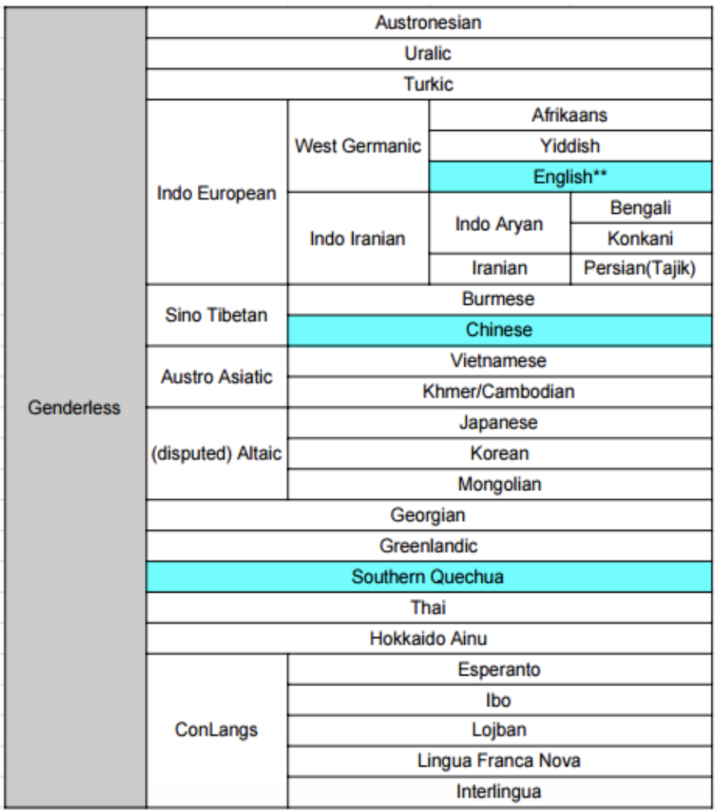 Figure 1. 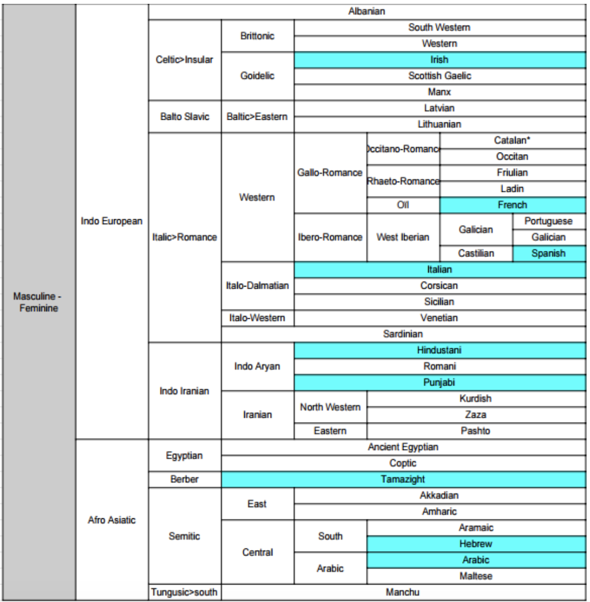 Figure 2. 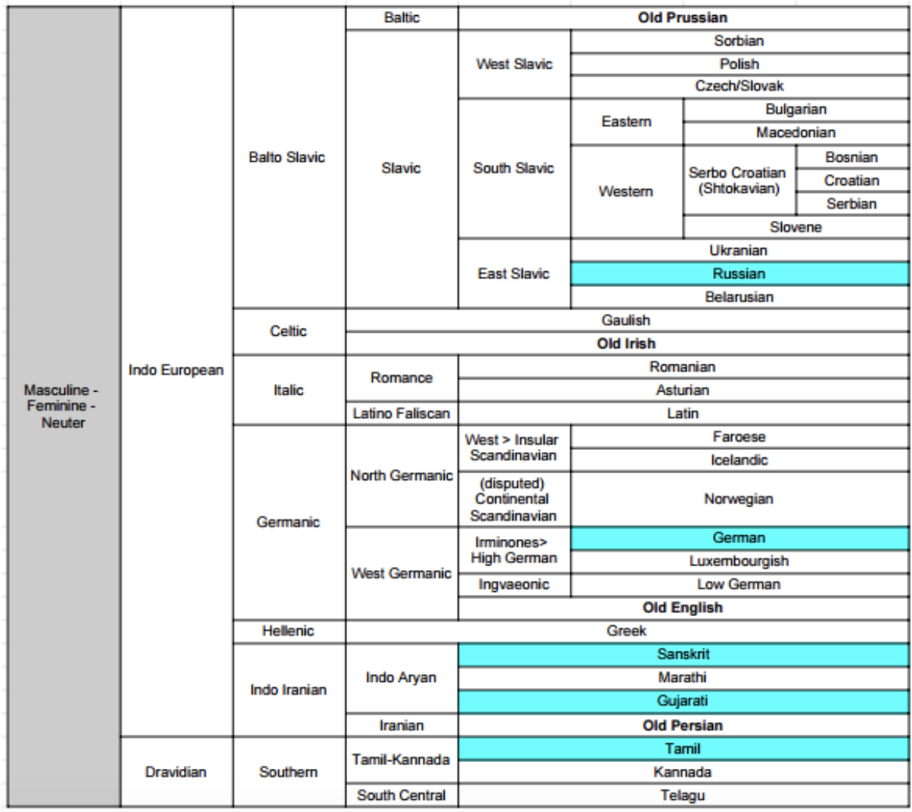 Figure 3. 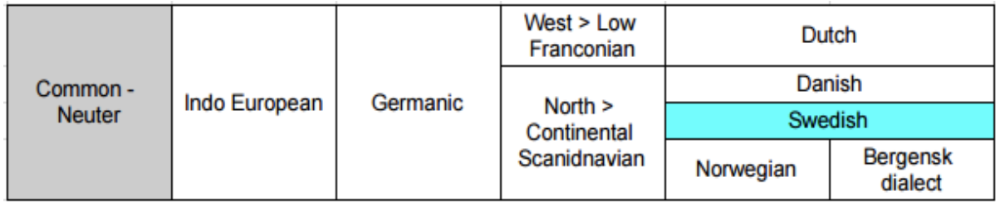 Figure 4. 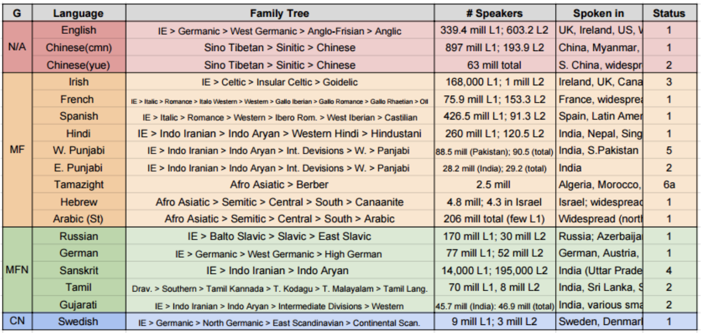 Figure 5. 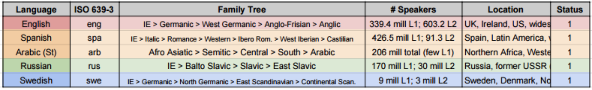 Figure 6. 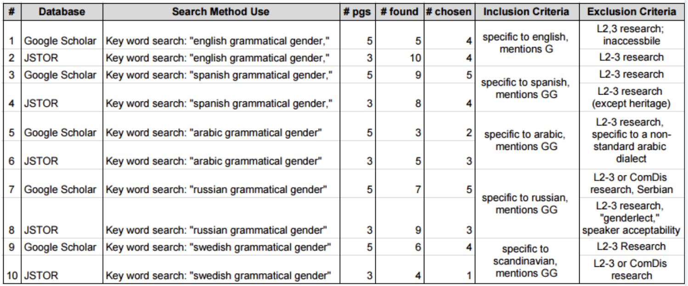 Figure 7. 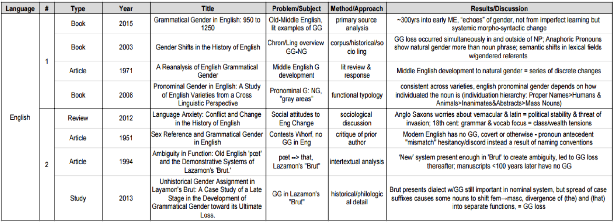 Figure 8. 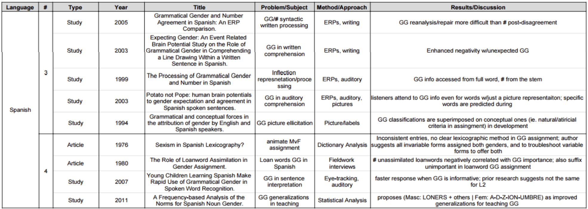 Figure 9. 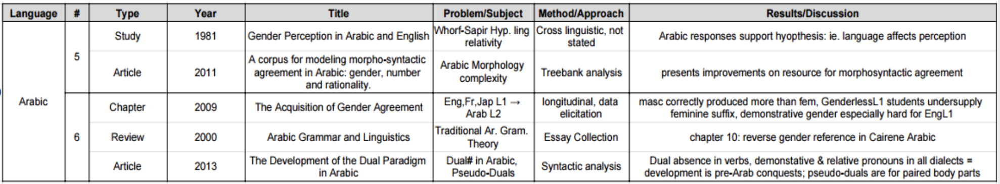 FIgure 10. 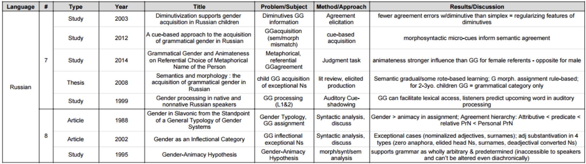 Figure 11. 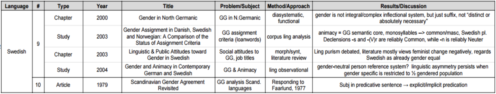 Figure 12.Presentation Poster:
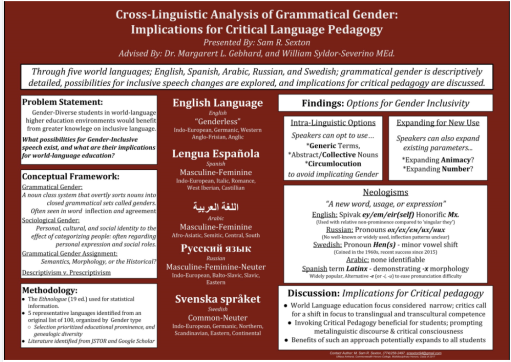WORKS CITED
- Abello-Contesse, C. (2009). Age and the Critical Period Hypothesis. English Language Teachin (ELT) Journal, 63(2). pp. 170-172. Oxford, United Kingom; Oxford University Press. DOI: https://doi.org/10.1093/elt/ccn072
- About Universal Design for Learning. (2015, May 11). CAST: Until Learning Has No Limits. Retrieved from http://www.cast.org/our-work/about-udl.html#.WPAkv2nyvIU
- Akhutina, T., Kurgansky, A., Polinsky, M., and Bates, E. (1999) Processing of Grammatical Gender in a Three-Gender System: Experimental Evidence from Russian. In Journal of Psycholinguist Research, 28(6), pp. 695-713. doi:10.1023/A:1023225129058
- Alhawary, M. (2009). The Acquisition of Gender Agreement. In Arabic Second Language Acquisition of Morphosyntax. pp. 49-100. Yale University Press. Retrieved from http://www.jstor.org/stable/j.ctt1nprr7.10
- Alkuhlani, S., and Habash, N. (2011). A corpus for modeling morpho-syntactic agreement in Arabic: gender, number and rationality. Stroudsburg, PA: Association for Computational Linguistics. ISBN: 978-1-932432-88-6
- Alsharkawi, M. (2013). The Development of the Dual Paradigm in Arabic. Al-'Arabiyya, 46(1). pp. 1-21. Retrieved from http://www.jstor.org/stable/43195544
- Bandle, O., Ungeheuer, G., Steger, H., Wiegand, H. E., & Burkhardt, A. (2002). The Nordic languages: an international handbook of the history of the North Germanic languages. Berlin, Germany: De Gruyter Publishing.
- Barber, H., and Carreiras, M. (2005). Grammatical Gender and Number Agreement in Spanish: An ERP Comparison. Journal of Cognitive Neuroscience, 17(1), pp. 137-153 doi:10.1162/0898929052880101
- Barkin, F. (1980). The Role of Loanword Assimilation in Gender Assignment. Bilingual Review / La Revista Bilingüe, 7(2), pp. 105-112. Retrieved from http://www.jstor.org/stable/25743887
- Baron, N.S. (1971). A Reanalysis of English Grammatical Gender. Lingua, Vol. 27, pp. 113-140. Retrieved from: http://www.sciencedirect.com/science/article/pii/0024384171900829
- Beard, R. (1995). The Gender-Animacy Hypothesis. In Journal of Slavic Linguistics, 3(1), pp. 59-96. Retrieved from http://www.jstor.org/stable/24598996
- Beemyn, G., PhD. (2008, November 20). Serving the Needs of Transgender College Students. Journal of Gay & Lesbian Issues in Education, 1(1), 33-50. Retrieved October 24, 2016, from http://www.tandfonline.com/doi/abs/10.1300/J367v01n01_03
- Belnap, R. K. and Niloofar H. (1997) Structuralist Studies in Arabic Linguistics: Charles A. Fergusonís Papers, 1954-1994. Leiden, Netherlands: Brill Publishers.
- Bendor-Samuel, J. T., & Kuiper, K. (2007, July 27). Niger-Congo languages. Retrieved September 5, 2016, from https://www.britannica.com/topic/Niger-Congo-languages
- Benmamoun, E. (1992). Functional and inflectional morphology: Problems of projection, representation and derivation. (Doctoral dissertation) University of Southern California, Los Angeles
- Berman, R.A. (2011, September-October). The Real Language Crisis. In AAUP: American Association of University Professors. Retrieved from https://www.aaup.org/article/real-language-crisis#.WOmbiWnyvIU
- Bettina, J. (2004) Genus im Wandel: Studien zu Genus und Animatizität anhand von Personenbezeichnungen im heutigen Deutsch mit Kontrastierungen zum Schwedischen. Stockholm, Sweden: Tyska institutionen, Stockholms universitet. Retrieved from http://www.diva-portal.org/smash/record.jsf?pid=diva2%3A306653&dswid=9759'
- Binaohan, B. (2014). Decolonizing trans/gender 101. Toronto, Canada: Biyuti Publishing
- Blau, Joshua. (1988) Studies in Middle Arabic and its Judaeo-Arabic Variety. Jerusalem, Israel: the Hebrew University.
- Braunmüller, K. (2000). Gender in North Germanic: A Diasystematic & Functional Approach. In B. Unterbeck, M. Rissanen, T. Nevalainen, and M. Saari (Eds.) Gender in Grammar and Cognition: Approaches to and Manifestations of Gender. New York, NY: Mouton de Gruyter. ISBN 3110162415
- Bright, W, ed. 1992. International Encyclopedia of Linguistics. Oxford: Oxford University Press. (Second edition, 2003, Frawley, W, ed.).
- Burbules, N.C., and Berk, R. (1999) Critical Thinking and Critical Pedagogy: Relations, Differences, and Limits. In T. S. Popkewitz, and L. Fendler (Eds.), Critical Theories in Education. New York, NY: Routledge Publishing. Retrieved from http://faculty.education.illinois.edu/burbules/papers/critical.html
- Callahan, G. N. (2009). Between XX and XY: Intersexuality and the myth of two sexes. Chicago, IL: Chicago Review Press.
- Cameron, D. (1995). Verbal Hygiene. London, United Kingdom: Routledge, from http://samples.sainsburysebooks.co.uk/9781136342080_sample_497407.pdf
- Clark, M.A., Losoff, A., McCracken, M.D., and Still, J.A. (1981) Gender Perception in Arabic and English. Language Learning: In Journal of Research in Language Studies, 31(1), pp. 159-169 DOI: 10.1111/j.1467-1770.1981.tb01377.x
- Clegg, J. (2011). A Frequency-based Analysis of the Norms for Spanish Noun Gender. Hispania, 94(2), 303-319. Retrieved from http://www.jstor.org/stable/23032172
- Comrie, B, ed. 1990. The World’s Major Languages. New York: Facts on File.
- Comrie, B; Matthews, S; and Polinsky, M, eds. 1997. The Atlas of Languages. New York: Facts on File.
- Corbett, G. (1988). Gender in Slavonic from the Standpoint of a General Typology of Gender Systems. In The Slavonic and East European Review, 66(1), pp. 1-20. Retrieved from http://www.jstor.org/stable/4209682
- Crystal, D. (2016). English as a global language (2nd Ed.). Cambridge, United Kingdom: Cambridge University Press. Retrieved from: http://culturaldiplomacy.org/academy/pdf/research/books/nation_branding/English_As
_A_Global_Language_-_David_Crystal.pdf - Curzan, A. (2003). Gender Shifts in the History of English. Cambridge, United Kingdom: Cambridge University Press. ISBN 978-0-521-82007-3.
- Dalby, A. 2004. Dictionary of Languages: The Definitive Reference to More Than 400 Languages. New York: Columbia University Press.
- Dewdney, J.C., McCauley, M., Pipes, R.E., and Conquest, R. (2017, March 10) Union of Soviet Socialist Republics: Historical State, Eurasia. Chicago, IL: Encyclopædia Britannica. Retrieved from: https://www.britannica.com/place/Soviet-Union
- Diglossia | Linguistics. [Def. 1] (2009, February 10). In Encyclopædia Britannica. Retrieved September 6, 2016, from https://www.britannica.com/topic/diglossia
- Dixon, Robert (1968). Noun Classes. Lingua. (1947-). Amsterdam: North-Holland. 0024-3841.
- Dmytryshyn, B. (Ed.) (1974) Modernization of Russia Under Peter I and Catherine II. New York, New York: John Wiley & Sons, Inc.
- Dominguez, A., Cuetos, F. & Segui, J. J Psycholinguist Res (1999) The Processing of Grammatical Gender and Number in Spanish. 28(5): pp. 485-498. doi:10.1023/A:1023216326448
- Editors of Encyclopædia Britannica (2015, March 20). British Empire. Retrieved from https://www.britannica.com/place/British-Empire
- Editors of Encyclopædia Britannica (2008, April 21). Hundred Years' War. Retrieved from https://www.britannica.com/event/Hundred-Years-War
- Editors of Encyclopædia Britannica (2015, June 8). Reconquista: Iberian History. Retrieved from https://www.britannica.com/place/British-Empire
- Ehret, C., Keita, S.O.Y., Newman, P., and Bellwood, P. (2004, December 3). The Origins of Afro-Asiatic. Science, Volume 306, Issue 5702, pp. 1680. DOI: 10.1126 / Science.306.5702.1680c.
- Eriksson, O. (1979). Scandinavian Gender Agreement Revisited. In Journal of Linguistics, 15(1), pp. 93-105. Retrieved from http://www.jstor.org/stable/4175473
- Fisher, D. J. (1976). The Anglo-Saxon age, c.400-1042. London, England: Longman. ISBN 0-582-48277-1
- Freire, P. (1996). Pedagogy of the oppressed (M. B. Ramos, Trans.). London, UK: Continuum International Publishing Group. ISBN 0826412769. Retrieved from http://www.msu.ac.zw/elearning/material/1335344125freire_pedagogy_of_the_oppresed.pdf
- Friedman, A. (2015, May 10). America’s Lacking Language Skills. In the Atlantic. Retrieved from: https://www.theatlantic.com/education/archive/2015/05/filling-americas-language-education-potholes/392876/
- Frisch, S., Hahne, A., & Friederici, A.D. (2004). Word Category and Verb-Agreement Structure Information in the Dynamics of Parsing. Cognition. 91(3), p.194. Retrieved from: https://www.ncbi.nlm.nih.gov/pubmed/15168895
- García de la Concha, D.V. (2009). Nueva Gramática de la Lengua Española. Madrid, España: Real Academia Española, Asociación Academias de la Lengua Española. Retrieved from: http://www.rae.es/sites/default/files/Sala_prensa_Dosier_Gramatica_2009.pdf
- Gender Neutral Pronoun (2010, January 24) The Need for a Gender-Neutral Pronoun. Retrieved from https://genderneutralpronoun.wordpress.com/
- Gender. [Def. 1] (2001-2006). In Harper, Douglas Online Etymology Dictionary. Retrieved September 5, 2016, from http://etymonline.com/index.php?allowed_in_frame=0&search=gender&searchmode=none
- Grammatical Gender. [Def. 1] (2004, January 5). In E.E. Loos, S. Anderson, D.H. Day Jr., P.C. Jordan, & J.D. Wingate SIL International Glossary of Linguistic Terms. Retrieved September 2, 2016, from http://www-01.sil.org/linguistics/glossaryoflinguisticterms/WhatIsGrammaticalGender.htm
- Hall, R. (1951). Sex Reference and Grammatical Gender in English. American Speech, 26(3), pp. 170-172. doi:10.2307/453074
- Hampares, K. (1976). Sexism in Spanish Lexicography? Hispania, 59(1), 100-109. doi:10.2307/339381
- Helmore, E. (2013, October 11). Policy Needs to Change to Address the US and UK's Language Deficits. In the Guardian: Education. Retrieved from https://www.theguardian.com/education/2013/oct/11/global-citizens-language-skills
- Hen [Def. 1] (2017) In Nationalencyklopedin. Retrieved from http://www.ne.se/uppslagsverk/encyklopedi/lång/hen
- Herdt, G. H. (1994). Third sex, third gender: Beyond sexual dimorphism in culture and history. New York, NY: Zone Books.
- Holloway, S. (n.d.). ScriptSource Script: Arabic [Arab]. Retrieved from http://scriptsource.org/cms/scripts/page.php?item_id=script_detail&key=Arab
- Holloway, S. (n.d.). ScriptSource Script: Braille [Brai]. Retrieved from http://scriptsource.org/cms/scripts/page.php?item_id=script_detail&key=Brai
- Holloway, S. (n.d.). ScriptSource Script: Deseret (Mormon) [Dsrt]. Retrieved from http://scriptsource.org/cms/scripts/page.php?item_id=script_detail&key=Dsrt
- Holloway, S. (n.d.). ScriptSource Script: Latin [Latn]. Retrieved from http://scriptsource.org/cms/scripts/page.php?item_id=script_detail&key=Latn
- Holloway, S. (n.d.). ScriptSource Script: Shavian (Shaw) [Shaw]. Retrieved from http://scriptsource.org/cms/scripts/page.php?item_id=script_detail&key=Shaw
- hooks, b. (1994) Teaching to Transgress: Education as the Practice of Freedom. New York, NY: Routledge Publishing. ISBN 0415908086. Retrieved from https://academictrap.files.wordpress.com/2015/03/bell-hooks-teaching-to-transgress.pdf
- Hornscheidt, A. (2003) Linguistic & Public Attitudes toward Gender in Swedish. In M. Hellinger, and H. Bußmann (Eds.) Gender Across Languages: The linguistic representation of women and men. Vol. 3. Amsterdam; Netherlands: John Benjamins Publishing. ISBN 9789027296818
- Howell, M. S. and Mukhopadhyaya, S. (1986) A Grammar of the Classical Arabic Language. (4th Ed.) Delhi, India: Gian Publishing House.
- Inflection | Linguistics. [Def. 1] (2009, February 10). In Encyclopædia Britannica. Retrieved September 6, 2016, from https://www.britannica.com/topic/inflection
- Ipek, H. (2009, June 19). Comparing and Contrasting First and Second Language Acquisition: Implications for Language Teachers. English Language Teaching ELT, 2(2), 155-163. doi:10.5539/elt.v2n2p155
- Jaschik, S. (2009, March 27). The Evolution of American Women's Studies. Retrieved October 24, 2016, from https://www.insidehighered.com/news/2009/03/27/women
- Jones, G. (1984). A History of the Vikings. Oxford, England: the Oxford University Press. ISBN 0-19-215882-1.
- Jones, C. (2015) Grammatical Gender in English: 950 to 1250. Abingdon-on-Thames, United Kingdom: Routledge Publishing. ISBN 9781317419396
- Kapatsinski, V. (2006). Sex Associations of Russian Generics. Journal of Slavic Linguistics, 14(1), 17-43. Retrieved from http://www.jstor.org/stable/24599536
- Karlgen, H. (1994) Han, Hon, Hen och He. Stockholm, Sweden; Svenska Dagbladet.
- Kaye, A. (2000). [Review of: Suleiman, Y. (1999). Arabic grammar and linguistics. London, UK: Curzon.] Bulletin of the School of Oriental and African Studies, University of London, 63(1), 115-117. Retrieved from http://www.jstor.org/stable/1559605
- Kempe, V., Brooks, P.J., Mironova, N. and Fedorova, O. (2003) ‘Diminutivization supports gender acquisition in Russian children’, Journal of Child Language, 30(2), pp. 471–485. doi: 10.1017/S0305000903005580
- Kilarski, M. (2003). Gender Assignment in Danish, Swedish and Norwegian: A Comparison of the Status of Assignment Criteria. Tromsø, Norway: Universitetet i Tromsø. DOI: http://dx.doi.org/10.7557/12.2
- Kramsch, C. (2014). Teaching Foreign Languages in an Era of Globalization. In The Modern Language Journal. 98(1). pp. 296-311. DOI: 10.1111/j.1540-4781.2014.12057.x
- Krejcova, M. (2015, February 26). The value of LGBT equality in the workplace. Retrieved October 26, 2016, from http://www.glaad.org/blog/value-lgbt-equality-workplace
- Krishnamurti, B., Pauls, E. P., Kunningham, J. M., Reddy, V. K., & E. (2008, October 2). Dravidian languages. Retrieved September 5, 2016, from https://www.britannica.com/topic/Dravidian-languages
- Kutas, M. & Federmeier, K.D. (2009). The N400. In Annual Review of Psychology, 60(1). Palo Alto, CA: Annual Reviews. Retrieved from: http://www.annualreviews.org/journal/psych
- Langevin, L. (2017, February 17). Mikhail Lomonosov: Russian Author and Scientist. Chicago, IL: Encyclopædia Britannica Inc. from https://www.britannica.com/biography/Mikhail-Vasilyevich-Lomonosov
- Left, L. (2013, December 1). ‘Preferred’ Pronouns Gain Traction at U.S. Colleges. Diverse Issues in Higher Education. Retrieved October 24, 2016, from http://diverseeducation.com/article/57805/
- Lenneberg, E.H. (1967). Biological Foundations of Language. New York, NY: John Wiley and Sons Publishing. ISBN 0-89874-700-7. Retrieved from http://www.ling.fju.edu.tw/biolinguistic/data/course/biological_foundations.htm
- Lerer, S. (2012). [Review of: Machan, T.W. (2009) Language Anxiety: Conflict and Change in the History of English. Oxford, UK: Oxford University Press] Modern Philology, 110(1), pp. E1-E4. doi:10.1086/666087
- Lew-Williams, C., & Fernald, A. (2007). Young Children Learning Spanish Make Rapid Use of Grammatical Gender in Spoken Word Recognition. Psychological Science, 18(3), 193-198. Retrieved from http://www.jstor.org/stable/40064714
- Lewis, M. P., Gary, F. S., & Charles D. F. (eds.). (2016). Ethnologue: Languages of the World, Nineteenth Edition. Dallas, Texas: SIL International. Online version: http://www.ethnologue.com.
- Lewis, P. M., Simons, G. F., & Fennig, C. D. (eds.). (2016). Language Status. Dallas, Texas: SIL International. Retrieved from https://www.ethnologue.com/about/language-status
- LGBT Youth. (2014, November 12). Retrieved October 26, 2016, from LGBT Health http://www.cdc.gov/lgbthealth/youth.htm
- Liberman, M. (2016, Fall). Prescriptive and descriptive linguistics. Retrieved October 01, 2016, from http://www.ling.upenn.edu/courses/Fall_2016/ling001/prescription.html
- Luck, S.J. (2005). An Introduction to the Event-Related Potential Technique. In The Quarterly Review of the Sciences: Neural Sciences. 81(2). Cambridge, MA: The MIT Press. ISBN 0-262-12277-4. Retrieved from: http://www.journals.uchicago.edu/doi/abs/10.1086/506120
- Lundqvist, J. (2012). Kivi Och Monsterhund. Linkoping, Sweden; Olika Förlag Publishing. ISBN 9789185845767.
- Luraghi, S (n.d.). The Origin of Proto Indo European Gender System: Typological Considerations. (Dissertation). Pavia, Italy: University of Pavia. Retrieved from http://allegatifac.unipv.it/silvialuraghi/Gender%20FoL.pdf
- Marquis, M. (2016, January 8). 2015 Word of the Year is singular “they.” American Dialect Society. Retrieved from http://www.americandialect.org/2015-word-of-the-year-is-singular-they
- Matthews, P.H. (2014) The Concise Oxford Dictionary of Linguistics (3rd ed.). Oxford, UK: Oxford University Press. ISBN: 9780199675128
- Mayr-Harting, Henry. (1991) The Coming of Christianity to Anglo-Saxon England. (3rd Ed.). London, United Kingdom: Batsford Publishing ISBN 978-0713410303
- McCrum, Robert. (2010, November 20). How the King James Bible Shaped the English Language. London, United Kingdom: the Guardian. Retrieved from https://www.theguardian.com/books/2010/nov/21/king-james-bible-english-language
- Millar, R. (1994). Ambiguity in Function: Old English 'pœt' and the Demonstrative Systems of Laȥamon's 'Brut.' Neuphilologische Mitteilungen, 95(4), pp. 415-432. Retrieved from http://www.jstor.org/stable/43346040
- Mulcaster, R. and McArthur, T. (1998) Concise Oxford Companion to the English Language. Oxford University Press: Oxford Reference Online. Retrieved from http://www.oxfordreference.com/views/ENTRY.html?subview=Main&entry=t29.e807
- Nekrasova, E. (1997). A Basic Modern Russian Grammar. Moscow, Russia: Dmitri Pobedimski Ebook Publishing. Retrieved from: http://user.ceng.metu.edu.tr/~e1394618/Rus%E7a%20Kitaplar/A%20Basic%20Modern%
20Russian%20Grammar.pdf - Neologism [Def. 1] (2017). Merriam Webster Online. Retrieved from https://www.merriam-webster.com/dictionary/neologism
- Noun Class. [Def. 1] (2004, January 5). In E.E. Loos, S. Anderson, D.H. Day Jr., P.C. Jordan, & J.D. Wingate SIL International Glossary of Linguistic Terms. Retrieved September 2, 2016, from http://www-01.sil.org/linguistics/glossaryoflinguisticterms/WhatIsGrammaticalGender.htm
- Nunberg, G. (1983, December). The Decline of Grammar. The Atlantic Monthly. http://www.ling.upenn.edu/courses/Fall_2016/ling001/Nunberg.html
- Office of the Assistant Secretary for Health (OASH) (2015, December 4). Providing Enhanced Resources. Retrieved October 26, 2016, from http://www.hhs.gov/programs/topic-sites/lgbt/enhanced-resources/index.html
- Ölander, A., Söderman, B., Kjellgren, B., Adriaens, F., Norén, K., Johansson, L.G., and Jakobson, L. (eds.) (2015) Chapter 2: Pronouns In Learning Swedish. Stockholm, Sweden: Swedish Institute. Retrieved from: http://learningswedish.se/courses/1/pages/pronouns
- Paolillo, John C. and Das, Anupam (2006, March 31) Evaluating Language Statistics: The Ethnologue and Beyond. Report for UNESCO Institute of Statistics. Bloomington, IN: University of Indiana, Retrieved from http://uis.unesco.org/sites/default/files/documents/evaluating-language-statistics-the-ethnologue-and-beyond-en_0.pdf
- Payind A., and McClimans, M. (2015, July 15) Chapter One: Languages. In Keys to Understanding the Middle East. Columbus, Ohio: The Ohio State University. Retrieved from https://osu.pb.unizin.org/key2mideast/
- Penny, R. (2002). A History Of The Spanish Language. (2 Ed.). Cambridge, United Kingdom: Cambridge University Press. ISBN 978-0521011846
- Penfield, W., and Roberts, L. (1959). Speech and Brain Mechanisms. Princeton, NJ: Princeton University Press. ISBN 0-691-08039-9.
- Pratt, M.L., Geisler, M., Kramsch, C., McGinnis, S., Patrikis, P., Ryding, K., and Saussy, H. (2007). Foreign Languages and Higher Education: New Structures for a Changed World. In Profession. Retrieved from https://www.mla.org/Resources/Research/Surveys-Reports-and-Other-Documents/Teaching-Enrollments-and-Programs/Foreign-Languages-and-Higher-Education-New-Structures-for-a-Changed-World
- Qu’emi, J. (2014, September 22) Multilingual Pronoun List. Retrieved from http://queerlifeadvice.tumblr.com/pronouns
- Quirk, R. (1985). The Use of English. London, United Kingdom: Longman. 978-0582326811
- Reichard, R. (2017, March 30). Latino/a vs. Latinx vs. Latine: Which Word Best Solves Spanish’s Gender Problem? In Latina Magazine. Retrieved from http://www.latina.com/lifestyle/our-issues/latinoa-latinx-latine-solving-spanish-gender-problem?utm_source=social_share&utm_medium=twitter&utm_campaign=social_share
- Rezanova, Z., Nekrasova, E., and Shilyaev, K. (2014). Gender-marked Metaphors: Influence of Grammatical Gender and Animateness on Referential Choice of Metaphorical Name of the Person in the Russian Language. In Procedia - Social and Behavioral Sciences, Vol. 154. http://dx.doi.org/10.1016/j.sbspro.2014.10.152
- Rodina, Y. (2008). Semantics and morphology : the acquisition of grammatical gender in Russian. Tromsø, Norway: Universitetet i Tromsø. Retrieved from http://munin.uit.no/handle/10037/2247
- Rodina, Y. and Westergaard, M. (2012) ‘A cue-based approach to the acquisition of grammatical gender in Russian’, Journal of Child Language, 39(5), pp. 1077–1106. doi: 10.1017/S0305000911000419.
- Ryding, K.C. (2005). A Reference Grammar for Modern Standard Arabic. Cambridge, United Kingdom: Cambridge University Press.
- Schiffman, H.F. (2002) Language Policy in the former Soviet Union. Philadelphia, PA: University of Pennsylvania. Retrieved from http://ccat.sas.upenn.edu/~haroldfs/540/handouts/ussr/soviet2.html
- Sera, M.D., Berge, C. A.H., and Del Castillo Pintado, J. (1994). Grammatical and conceptual forces in the attribution of gender by English and Spanish speakers. Cognitive Development, 9(3), pp. 261-292, http://dx.doi.org/10.1016/0885-2014(94)90007-8
- Shinkawa, S. (2012) Unhistorical Gender Assignment in Layamon’s Brut: A Case Study of a Late Stage in the Development of Grammatical Gender toward its Ultimate Loss. Linguistic Insights. Volume 156. Bern, Switzerland: Peter Lang Publishing Group 978-3-0343-1124-3
- S’hiri, S. (2004). Culture: History of the Arabic Language تاريخ اللغة العربيّة in Alif Baa Unit 1. Berkeley, California: the University of California at Berkeley. Retrieved from http://arabicwithoutwalls.ucdavis.edu/aww/alifbaa_unit1/ab1_culture_history.html
- Siemund, P. (2008) Pronominal Gender in English: A Study of English Varieties from a Cross Linguistic Perspective. London, UK: Routledge Publishing. 291(1) Retrieved from https://www.researchgate.net/publication/278406710
- Simons, G. F., & Gordon, R. G. (2006). Ethnologue. Encylopedia of Language and Linguistics (2nd Ed.). Amsterdam, Netherlands: Elsevier. Pg. 250-253. Retrieved from http://www-01.sil.org/~simonsg/preprint/ELL2%20Ethnologue.pdf
- Snow, C. E., & Hoefnagel-Hohle, M. (1978, December). The Critical Period for Language Acquisition: Evidence from Second Language Learning. Child Development, 49(4), 1114-1128. doi:10.2307/1128751
- Sokolsky, A.A. (1965). A History of the Russian Language. Madrid, Spain: Impr. Taravilla, 869565632
- Spencer, A. (2002). Gender as an Inflectional Category. In Journal of Linguistics, 38(2), pp. 279-312. Retrieved from http://www.jstor.org/stable/4176736
- Swoyer, Chris (2015), "The Linguistic Relativity Hypothesis", Stanford Encyclopedia of Philosophy Archive. Retrieved from https://plato.stanford.edu/archives/sum2015/entries/relativism/supplement2.html
- Thomas, G. (1991). Linguistic purism. London, UK: Longman.
- Thompson, I. (2015, September 12). About World Languages: Swedish. Leesburg, VA: The Technology Development Group. Retrieved from http://aboutworldlanguages.com/swedish
- Tilque, D. (n.d.). Basque Palindromes. Retrieved September 5, 2016, from http://digitalcommons.butler.edu/cgi/viewcontent.cgi?article=3825&context=wordways
- Trammel, J. B. (2014, May/June). LGBT Challenges in Higher Education Today: 5 Core ... Retrieved October 24, 2016, from http://agb.org/trusteeship/2014/5/lgbt-challenges-higher-education-today-5-core-principles-success
- Van Wormer, K., & McKinney, R. (2009, Fall). What Schools can do to help Gay/Lesbian/Bisexual Youth: A Harm Reduction Approach. Adolescence, 38(151), 409-420. Retrieved October 24, 2016, from http://search.proquest.com/docview/195933524/fulltext/7611D06725BB486APQ/1?accountid=14572
- Vanhove J. (2013). The Critical Period Hypothesis in Second Language Acquisition: A Statistical Critique and a Reanalysis. White SA, ed. PLoS ONE. 8(7), doi:10.1371.
- Vinzhegin, O. (2010, February 8). Alexander Pushkin – Creator Of Modern Russian Language. Retrieved from http://www.learnrussianlanguage.ru/alexander-pushkin-creator-of-modern-russian-language
- Versteegh, K. (1984) Pidginization and Creolization: The Case of Arabic. Amsterdam, Netherlands: John Benjamins Publishing.
- Versteegh, K. (1997). The Arabic Language. Edinburgh, Scotland: Edinburgh University Press.
- Welles, E. (2004). Foreign Language Enrollments in United States Institutions of Higher Education. In ADFL Bulletin. 35(2-3). pp.7–26.
- Wicha, N.Y.Y., Moreno, E.M., and Kutas, M. (2003a). Expecting Gender: An Event Related Brain Potential Study on the Role of Grammatical Gender in Comprehending a Line Drawing Within a Written Sentence in Spanish. Cortex, 39(3), pp. 483-508 http://dx.doi.org/10.1016/S0010-9452(08)70260-0
- Wicha, N.Y.Y., Batesa, E.A., Morenoa, E.M., and Kutas, M. (2003b). Potato not Pope: human brain potentials to gender expectation and agreement in Spanish spoken sentences. La Jolla, California: University of California, San Diego Departments of Cognitive Science & Neurosciences. Retrieved from: http://kutaslab.ucsd.edu/people/kutas/pdfs/2003.NL.165.pdf
- Wilmsen, D. (2013). Cross-Addressing*: Reverse Gender Reference in Spoken Cairene Arabic. In Y. Suleiman (Ed.) Arabic Grammar and Linguistics, pp. 203-221. London, UK: Curzon Publishing.
- Wunderlich, Dieter. Grammatical Agreement. (2001). In N.J. Smelser and Paul B. Bates (eds.) International Encyclopedia of Social and Behavioral Sciences, 6330-6334. Oxford: Pergamon 2001. From https://user.phil-fak.uni-duesseldorf.de/~wdl/Agreem.pdf
- Wurm, S. (2001). Atlas of the World’s Languages in Danger of Disappearing. (2nd Ed.). Barcelona: UNESCO Publications.
- Нестор. (2006) Повесть Временных Лет. (О. В. Творогова, Trans.) St. Petersburg, Russia: Институт Русской Литературы: Пушкинский дом (Original work credited 1337). Retrieved from http://lib2.pushkinskijdom.ru/tabid-4869